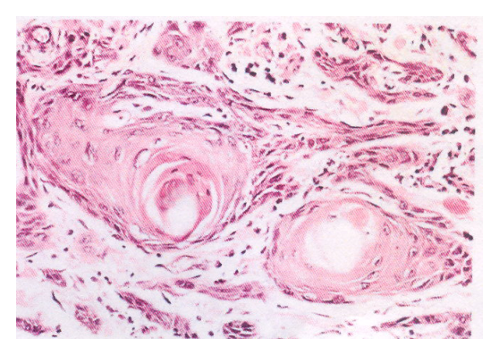
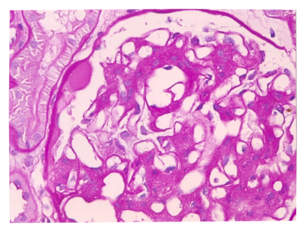

開卷有益 ／
醫師 ／ 醫學（二）（包括微生物免疫學、寄生蟲學、藥理學、病理學、公共衛生學等科目知識及其臨床之應用） ／ 111 年第 2 次111 年第 2 次醫師醫學（二）（包括微生物免疫學、寄生蟲學、藥理學、病理學、公共衛生學等科目知識及其臨床之應用）試題與答案
這一頁是民國 111 年第 2 次醫師醫學（二）（包括微生物免疫學、寄生蟲學、藥理學、病理學、公共衛生學等科目知識及其臨床之應用）的整份歷屆試題，共 100 題，題目與標準答案出自考選部「國家考試試題及測驗式試題答案」開放資料，其中 100 題附有詳解。以下逐題列出題幹、選項與答案；要計時作答或記錄成績，請用線上練習。
考選部原始場次代碼：111100
線上作答這一科 →
全部 100 題
第 1 題
一位船員皮膚上有傷口化膿且周邊紅斑，經鑑定發現是一株好氧，且具有觸酶（catalase）和凝集酶（coagulase）活性，同時可以存活在高鹽培養基的細菌。依據前述，該菌最可能是：
（A） 創傷弧菌（Vibrio vulnificus）（B） 腸炎弧菌（Vibrio parahaemolyticus）（C） 金黃色葡萄球菌（Staphylococcus aureus）（D） 表皮葡萄球菌（Staphylococcus epidermidis）答案：（C）
詳解與考點 正解：傷口化膿合併好氧、觸酶陽性、凝集酶陽性及耐高鹽，這組鑑定線索指向金黃色葡萄球菌。Staphylococcus aureus 為觸酶與凝集酶皆陽性的葡萄球菌，常造成化膿性皮膚軟組織感染，故選 C。
A、B：創傷弧菌與腸炎弧菌雖可與海洋暴露有關而看似符合船員身分，但它們不是以凝集酶陽性作為鑑定特徵；題幹的生化組合明確支持（C）金黃色葡萄球菌。
D：表皮葡萄球菌同為觸酶陽性、可耐高鹽，但凝集酶陰性；這一項是與金黃色葡萄球菌的關鍵鑑別。
本題考點：金黃色葡萄球菌（Staphylococcus aureus）的鑑定；觸酶試驗（catalase test）區分葡萄球菌與鏈球菌；凝集酶試驗（coagulase test）區分金黃色與表皮葡萄球菌。
第 2 題
下列何者為治療花柳性淋巴肉芽腫（lymphogranuloma venereum）的首選藥物？
（A） metronidazole（B） penicillin（C） doxycycline（D） isoniazid答案：（C）
詳解與考點 正解：花柳性淋巴肉芽腫由 Chlamydia trachomatis 的 L1、L2、L3 血清型引起，需使用對細胞內披衣菌有效的抗生素；doxycycline 為標準首選治療，故選 C。
A：metronidazole 主要治療厭氧菌與部分原蟲感染，並非披衣菌感染的首選。
B：penicillin 主要干擾細菌細胞壁合成，對細胞內披衣菌的治療不適當。
D：isoniazid 是抗結核藥，標的為分枝桿菌的分枝菌酸合成，與本病病原無關。
本題考點：花柳性淋巴肉芽腫（lymphogranuloma venereum）；Chlamydia trachomatis L1-L3；四環素類（tetracyclines）對披衣菌感染的治療。
第 3 題
胜肽聚醣（Peptidoglycan）為革蘭氏陽性細菌細胞壁之主要成分，下列那一隻細菌除外？
（A） 砂眼披衣菌（Chlamydiatrachomatis）（B） 糞腸球菌（Enterococcusfaecalis）（C） 仙人掌桿菌（Bacilluscereus）（D） 單核細胞增多性李斯特菌（Listeriamonocytogenes）答案：（A）
詳解與考點 正解：題幹問革蘭氏陽性細菌的例外，砂眼披衣菌缺乏典型的肽聚醣細胞壁，且為專性細胞內病原；因此不屬具有革蘭氏陽性菌典型肽聚醣細胞壁的細菌，故選 A。
B：糞腸球菌是革蘭氏陽性球菌，具有肽聚醣細胞壁，不是例外。
C：仙人掌桿菌是革蘭氏陽性芽孢桿菌，細胞壁主要成分包含肽聚醣，不是例外。
D：單核細胞增多性李斯特菌是革蘭氏陽性桿菌，具有肽聚醣細胞壁，故非答案。
本題考點：披衣菌（Chlamydia）的細胞壁特性；肽聚醣（peptidoglycan）是多數細菌細胞壁的結構成分；革蘭氏陽性菌（Gram-positive bacteria）的細胞壁。
第 4 題
有關細菌質體（plasmid）之敘述，下列何者最適當？
（A） 可在細菌間傳遞帶有抗藥性相關基因（B） 與細菌染色體同步進行複製（C） 多為存在於細胞質內之線狀 RNA（D） 僅存在於革蘭氏陰性菌之細胞質中答案：（A）
詳解與考點 正解：質體是細菌染色體外、可自主複製的 DNA 分子，常攜帶抗藥性基因，並可藉接合作用等水平基因轉移在細菌間散播，故（A）最適當。
B：質體有自己的複製起點與複製調控，不必與細菌染色體同步複製，故此敘述過度限定。
C：多數質體是環狀雙股 DNA，而非細胞質中的線狀 RNA。
D：質體可存在於革蘭氏陽性或陰性細菌，並非僅限革蘭氏陰性菌。
本題考點：質體（plasmid）；水平基因轉移（horizontal gene transfer）；抗藥性基因（antimicrobial resistance genes）的傳播。
第 5 題
當細菌培養液只含有乳糖，此時抑制子（repressor）和代謝基因活化蛋白質（catabolite gene-activator protein ,CAP）之活性，以及調節乳糖操縱子（lac operon）表現的敘述，下列何者正確？
（A） 抑制子的功能被抑制，且 CAP 不活化，促使乳糖操縱子表現（B） 抑制子的功能被抑制，且 CAP 不活化，導致乳糖操縱子不表現（C） 抑制子的功能被抑制，且 CAP 被活化，導致乳糖操縱子不表現（D） 抑制子的功能被抑制，且 CAP 被活化，促使乳糖操縱子表現答案：（D）
詳解與考點 正解：培養液只含乳糖表示沒有葡萄糖。乳糖進入細胞後，部分經 β-galactosidase 轉成異乳糖（allolactose）；異乳糖結合抑制子，使其對 operator 的親和力下降而解除抑制；缺乏葡萄糖使 cAMP 上升，CAP 被活化並促進 RNA 聚合酶作用，乳糖操縱子高度表現，故選 D。
A：抑制子被抑制的判斷正確，但無葡萄糖時 CAP 應被活化，不是不活化；此選項漏掉正向調控。
B：乳糖存在時抑制子已失去阻斷作用，不能因此導致操縱子不表現。
C：CAP 被活化本可促進轉錄，但選項將最終效果寫成不表現，與兩個調控訊號同時有利轉錄相反。
本題考點：乳糖操縱子（lac operon）；抑制子（repressor）的負向調控；分解代謝物活化蛋白（catabolite activator protein, CAP）與 cAMP 的正向調控。
第 6 題
有關無乳鏈球菌（Streptococcus agalactiae）的敘述，下列何者錯誤？
（A） 屬於 B 群鏈球菌（Group B streptococci）（B） 血清學鑑定的三個主要標誌為 Lancefield group B 抗原（antigen）、型特異性莢膜多醣體（type-specific capsularpolysaccharides）、表面蛋白質（surface proteins）（C） 主要棲居在人體上呼吸道（D） 此菌可經由產婦生產時感染嬰兒答案：（C）
詳解與考點 正解：本題問錯誤敘述。無乳鏈球菌的主要定殖部位是腸胃道與女性生殖泌尿道，孕婦可垂直傳染新生兒；（C）稱其主要棲居上呼吸道，與典型生態位不符，故選 C。
A：無乳鏈球菌即 Streptococcus agalactiae，屬 Lancefield B 群鏈球菌，敘述正確，故非答案。
B：其可依群別抗原、莢膜多醣與表面蛋白等抗原特徵作血清學區分，敘述正確。
D：新生兒可在通過產道時感染無乳鏈球菌，造成早發型感染，故敘述正確。
本題考點：無乳鏈球菌（Streptococcus agalactiae）；B群鏈球菌（Group B streptococci）的定殖；母嬰垂直傳染（vertical transmission）。
第 7 題
關於白喉桿菌（Corynebacterium diphtheriae）的敘述，下列何者錯誤？
（A） 主要的致病因子為白喉毒素（diptheria toxin），作用於轉譯延長因子（elongation factor-2 , EF-2）（B） 造成疾病的主要生物型（biotype）是 gravis biotype（C） 細胞壁上含有短鏈分枝菌酸（short-chain mycolic acids）（D） 主要造成呼吸道或皮膚的疾病本題送分，無標準答案
詳解與考點 本題經考選部公告一律給分。(B)「造成疾病之主要生物型為gravis biotype」之敘述各教材立場不一，部分文獻主張mitis biotype於現代流行病學上更常見於臨床病例，致(B)是否為錯誤敘述出現分歧。(A)白喉毒素作用於EF-2、(C)細胞壁含短鏈分枝菌酸、(D)主要造成呼吸道或皮膚疾病，三者均為公認正確敘述，可排除。作答以現行微生物學白喉桿菌教材為準。
第 8 題
關於鬆脆類桿菌（Bacteroides fragilis）的敘述，下列何者錯誤？
（A） 是少數沒有莢膜（capsule）的病原菌之一（B） 可產生不耐熱（heat-labile）的鋅金屬蛋白酶（zinc metalloprotease）毒素造成腹瀉（C） 其脂多醣體（lipopolysaccharides, LPS）具微毒性或無毒性（D） 可產生β-內酰胺酶（β-lactamases），使其對青黴素（penicillin）具抗藥性答案：（A）
詳解與考點 正解：本題問錯誤敘述。鬆脆類桿菌具有多醣莢膜，莢膜有助其在腹腔感染形成膿瘍；（A）稱其沒有莢膜，正與其重要毒力因子相反，故選 A。
B：產毒性鬆脆類桿菌可產生不耐熱的鋅金屬蛋白酶毒素，造成腹瀉，敘述正確，故非答案。
C：其 LPS 的內毒素活性遠弱於典型腸桿菌科細菌，可呈微毒性或近乎無毒性，敘述正確。
D：鬆脆類桿菌可產生β-內酰胺酶而對青黴素具抗藥性，臨床上是重要治療考量，敘述正確。
本題考點：鬆脆類桿菌（Bacteroides fragilis）；多醣莢膜（polysaccharide capsule）與腹腔膿瘍；β-內酰胺酶（β-lactamase）介導抗藥性。
第 9 題
關於尿素分解尿漿菌（Ureaplasma urealyticum）的敘述，下列何者正確？
（A） 其細胞膜富含固醇類（sterols）（B） 主要引起皮膚病灶（skin lesions）（C） 為降低罹患產後熱（postpartum fever）的風險，建議預備懷孕的婦女應施打此菌之疫苗（D） 常使用盤尼西林（penicillin）治療此菌引起的感染症答案：（A）
詳解與考點 正解：尿素分解尿漿菌屬 Mollicutes，沒有剛性的肽聚醣細胞壁，必須由細胞膜中的固醇維持膜穩定性；因此其細胞膜富含 sterols，故選 A。
B：此菌主要與泌尿生殖道感染、妊娠及新生兒相關感染有關，非以皮膚病灶為主要表現。
C：目前沒有供預備懷孕婦女常規接種以預防此菌的疫苗，故敘述不正確。
D：因沒有肽聚醣細胞壁，盤尼西林無可作用的細胞壁合成標的，不能作為常用治療。
本題考點：尿素分解尿漿菌（Ureaplasma urealyticum）；Mollicutes 的無細胞壁特性；固醇（sterols）維持細胞膜與β-內酰胺類抗藥性。
第 10 題
下列有關病毒的敘述，何者正確？
（A） 愛滋病毒（human immunodeficiency virus）之酵素均由被感染細胞的基因轉譯製造（B） 茲卡病毒（Zika virus）為負股(-) RNA 病毒（C） 新型冠狀病毒（SARS-CoV-2）之複製在細胞質中進行（D） 腸病毒（enterovirus）具有外套膜，為 RNA 病毒答案：（C）
詳解與考點 正解：SARS-CoV-2 是正股單鏈 RNA 病毒，其 RNA 複製與轉錄複合體在宿主細胞質內形成並進行基因體複製，故（C）正確。
A：HIV 的逆轉錄酶、整合酶與蛋白酶等關鍵酵素由病毒基因編碼，不能說均由被感染細胞基因轉譯製造。
B：茲卡病毒屬 Flavivirus，為正股單鏈 RNA 病毒，不是負股 RNA 病毒。
D：腸病毒雖為 RNA 病毒，但屬無外套膜病毒；將 RNA 病毒誤等同於有外套膜是常見誘答。
本題考點：SARS-CoV-2 的病毒複製（viral replication）；正股 RNA 病毒（positive-sense RNA virus）；HIV 病毒酵素（viral enzymes）。
第 11 題
下列那幾種病毒可經由動物暨節肢動物而傳播？①漢他病毒（hantavirus） ②日本腦炎病毒（Japaneseencephalitis virus） ③黃熱病病毒（yellow fever virus） ④狂犬病病毒（rabies virus）
（A） ①②（B） ②③（C） ③④（D） ②④答案：（B）
詳解與考點 正解：題幹所稱經動物暨節肢動物傳播，重點是 arbovirus 的蚊媒傳播。日本腦炎病毒與黃熱病病毒皆藉蚊子傳播，故正確組合為②③，即選 B。
A：漢他病毒由齧齒類排泄物的氣溶膠等方式傳播，沒有節肢動物媒介；因此①②不是正確組合。
C：黃熱病病毒雖符合，但狂犬病病毒主要經受感染哺乳動物咬傷傳播，沒有節肢動物媒介。
D：日本腦炎病毒符合，但狂犬病病毒不符合蚊蟲等節肢動物傳播的條件。
本題考點：蟲媒病毒（arboviruses）；日本腦炎病毒（Japanese encephalitis virus）與黃熱病病毒（yellow fever virus）的蚊媒傳播；人畜共通傳染（zoonosis）與節肢動物媒介的區別。
第 12 題
下列何者不是 Bunyavirus 與 Arenavirus 共同具有的特性？
（A） 為人畜共同傳染（zoonoses）的病毒（B） 基因體為片段 RNA 組成（segmented RNA genome）（C） 可能造成出血熱（hemorrhagic fever）（D） 二者病毒顆粒（virion）中都沒有包裹核糖體（ribosome）答案：（D）
詳解與考點 正解：本題問兩病毒科「不共同」的特性。Arenavirus 病毒顆粒會包裹宿主核糖體，呈砂粒狀外觀；Bunyavirus 不具有這項特徵，因此（D）稱二者都沒有核糖體不正確，故選 D。
A：兩者許多成員都以動物作為自然宿主並可感染人類，屬人畜共同傳染病毒，為共同特性。
B：Bunyavirus 與 Arenavirus 的 RNA 基因體皆為分節型，敘述正確，故非答案。
C：兩科皆有可引起病毒性出血熱的成員，敘述正確。
本題考點：Arenavirus；Bunyavirus；病毒顆粒中的宿主核糖體（host ribosomes）是 Arenavirus 的辨識特徵。
第 13 題
下列何者不是負股 RNA 病毒（negative-sense RNA virus）？
（A） 流感病毒（influenza virus）（B） 伊波拉病毒（Ebola virus）（C） 狂犬病毒（rabies virus）（D） 登革熱病毒（dengue virus）答案：（D）
詳解與考點 正解：本題問不是負股 RNA 病毒者。登革熱病毒屬 Flavivirus，基因體為正股單鏈 RNA，可直接作為 mRNA 翻譯，故（D）不是負股 RNA 病毒。
A：流感病毒屬 Orthomyxovirus，為負股分節 RNA 病毒，故非答案。
B：伊波拉病毒屬 Filovirus，為負股單鏈 RNA 病毒，故非答案。
C：狂犬病毒屬 Rhabdovirus，為負股單鏈 RNA 病毒，故非答案。
本題考點：負股 RNA 病毒（negative-sense RNA viruses）；Flavivirus 的正股 RNA 基因體（positive-sense RNA genome）；病毒分類（virus classification）。
第 14 題
下列人類疾病何者不是由痘科病毒（Poxvirus）引起？
（A） 天花（B） 傳染性軟疣（molluscum contagiosum）造成的皮膚病灶（C） 手指頭上的 Orf 病灶（D） 疱疹性膿性指頭疽（whitlow）答案：（D）
詳解與考點 正解：疱疹性膿性指頭疽是單純疱疹病毒造成的手指感染，屬 Herpesviridae 而非 Poxviridae，故選 D。
A：天花由 Variola virus 引起，屬痘科病毒，敘述所指疾病不是答案。
B：傳染性軟疣由 molluscum contagiosum virus 引起，屬痘科病毒，故非答案。
C：Orf 病灶由 parapoxvirus 引起，屬痘科病毒，故非答案。
本題考點：痘科病毒（Poxviridae）；單純疱疹病毒（herpes simplex virus）；疱疹性膿性指頭疽（herpetic whitlow）的病因鑑別。
第 15 題
下列那一種藥物，主要抑制 C 型肝炎病毒（hepatitisC virus）的聚合酶（polymerase）？
（A） 索華迪（sofosbuvir）（B） 波普瑞韋（boceprevir）（C） 拉米夫定（lamivudine）（D） 聚乙二醇干擾素（pegylated interferon）答案：（A）
詳解與考點 正解：索華迪的有效成分 sofosbuvir 是 C 型肝炎病毒 NS5B RNA 依賴 RNA 聚合酶抑制劑，藉終止病毒 RNA 鏈延長抑制複製，故選 A。
B：boceprevir 主要抑制 HCV NS3/4A 蛋白酶，不是聚合酶抑制劑。
C：lamivudine 是核苷類反轉錄酶抑制劑，主要用於 HIV 與 B 型肝炎病毒，並非 HCV NS5B 聚合酶的主要抑制藥。
D：pegylated interferon 透過調節宿主抗病毒免疫反應發揮作用，並非直接抑制 HCV 聚合酶。
本題考點：C 型肝炎直接作用抗病毒藥（direct-acting antivirals）；NS5B RNA-dependent RNA polymerase；sofosbuvir 的核苷酸類聚合酶抑制機轉。
第 16 題
近年來基質輔助雷射脫附飛行時間質譜儀（matrix-assisted laser desorption ionization-time of flight mass spectrometry,MALDI-TOF MS）廣泛應用在微生物的鑑定上，其主要的偵測標的物為何？
（A） 蛋白質（B） 核酸（C） 粒線體（D） 微量元素答案：（A）
詳解與考點 正解：MALDI-TOF MS 用於微生物鑑定；此技術量測微生物蛋白質被游離後的質荷比（mass-to-charge ratio），尤其可依核糖體蛋白等形成的特徵質譜指紋進行比對。不同菌種的蛋白質峰圖不同，故主要偵測標的為蛋白質，選 A。
B：核酸可用 PCR、定序等方法鑑定微生物，但不是 MALDI-TOF MS 常規鑑定所主要讀取的訊號。核酸同樣可用於病原鑑定而看似合理，錯在混淆了分子檢測與質譜蛋白指紋。
C：粒線體是細胞胞器，不是 MALDI-TOF MS 在臨床微生物鑑定時所設定的主要分析標的；且細菌本身並無粒線體。
D：微量元素不提供足以區分菌種的穩定蛋白質指紋，並非此儀器鑑定微生物的主要依據。
本題考點：基質輔助雷射脫附游離飛行時間質譜（matrix-assisted laser desorption ionization-time of flight mass spectrometry, MALDI-TOF MS）——以蛋白質質譜指紋快速鑑定微生物；質荷比（mass-to-charge ratio）——帶電分子在質譜中的核心量測參數。
第 17 題
下列何者具有寬大菌絲，且沒有或較少細胞中隔（septum）？
（A） Fusarium spp.（B） Trichosporon spp.（C） Rhizopus spp.（D） Scedosporium spp.答案：（C）
詳解與考點 正解：「寬大菌絲、沒有或很少中隔」；Rhizopus spp. 屬毛黴目黴菌，典型形態是寬廣、近乎無隔的菌絲，常呈較接近直角的分枝。因此符合者為（C）Rhizopus spp.，故選 C。
A：Fusarium spp. 的菌絲多為較細、透明且具中隔，常可見鐮刀形大分生孢子，與寬大少隔菌絲不符。
B：Trichosporon spp. 為酵母樣真菌，可形成菌絲、節孢子與芽生細胞，但不是以寬大少隔菌絲為鑑別特徵。
D：Scedosporium spp. 的透明菌絲具中隔，形態上容易與其他具隔絲狀真菌混淆；題目所述正是用來和此類具隔菌絲區分的線索。
本題考點：毛黴病菌（Mucorales）——Rhizopus 的組織菌絲寬大且少隔或無隔；透明絲狀真菌（hyaline molds）——Fusarium、Scedosporium 多見具中隔菌絲。
第 18 題
下列何者最可以聯結先天免疫及後天免疫作用之抗原呈獻細胞（antigen-presenting cell）？
（A） NK cell（B） basophil（C） neutrophil（D） dendritic cell答案：（D）
詳解與考點 正解：「聯結先天免疫及後天免疫」且指定抗原呈獻細胞。樹突細胞（dendritic cell）在周邊組織藉先天免疫受體偵測病原後，攝取並處理抗原，遷移至淋巴組織以 MHC 與共刺激訊號活化初始 T 細胞，故最能銜接兩套免疫系統，選 D。
A：NK cell 屬先天免疫淋巴細胞，能毒殺缺少適當 MHC class I 訊號的靶細胞，但不是活化初始 T 細胞的主要專職抗原呈獻細胞。
B：basophil 可參與 IgE 相關過敏反應與寄生蟲免疫，並釋放發炎介質；其功能重點不在將抗原呈獻給初始 T 細胞。
C：neutrophil 是急性發炎時的吞噬細胞，雖可吞噬病原並有有限抗原呈獻能力，卻不像（D）樹突細胞般專職啟動初始 T 細胞，因此不是最佳答案。
本題考點：樹突細胞（dendritic cell）——專職抗原呈獻細胞，連結先天免疫偵測與適應性 T 細胞反應；初始 T 細胞活化（naive T-cell priming）——需抗原呈獻、MHC 與共刺激訊號。
第 19 題
王小弟今年 13 歲，因鼻腔內長了膿包並有持續擴大的跡象，而到醫院就診。醫生檢查結果有類似慢性發炎的現象，問診發現以往王小弟也常有類似感染後，很緩慢痊癒的情況。經由詳細檢查發現他的 CD8 T 細胞數量異常的低，而其 MHC class I 分子在細胞上的表現量也極少，因此醫生分析後認為王小弟最有可能得了：
（A） chronicgranulomatous disease（B） MHC class I deficiency（C） MHC class II deficiency（D） leukocyte adhesion deficiency答案：（B）
詳解與考點 正解：MHC class I 表現極少且 CD8 T 細胞數量異常低。CD8 T 細胞在胸腺正向選擇與辨識靶細胞都依賴 MHC class I；其缺乏會使 CD8 T 細胞發育與功能受損，並造成反覆、慢性呼吸道或細菌感染的表現，故為（B）MHC class I deficiency。
A：chronic granulomatous disease 是吞噬細胞 NADPH oxidase 缺陷，主要問題是氧化殺菌失敗與反覆感染 catalase-positive 病原，無法解釋題幹特別給出的 MHC class I 與 CD8 T 細胞異常。
C：MHC class II deficiency 會妨礙 CD4 T 細胞的正向選擇與輔助功能，預期以 CD4 T 細胞與抗體反應問題為主，而非 CD8 T 細胞低下。
D：leukocyte adhesion deficiency 的典型是白血球黏附與移出血管受阻、膿液形成少及傷口癒合差；雖也可能反覆感染，卻不能造成題幹的 MHC class I 表現極少。
本題考點：MHC class I 缺乏症（MHC class I deficiency）——MHC class I 低下導致 CD8 T 細胞發育與細胞毒性反應受損；胸腺正向選擇（positive selection）——T 細胞須辨識自身 MHC 才能存活成熟。
第 20 題
T 細胞的抗原受體（T cell receptor, TCR）在發育過程中會產生多樣性，下列何種機制和 TCR 多樣性有關？①V region 由數個基因片段（gene segments）組成 ②V(D)J DNA 重組 ③RAG1 和 RAG2 基因表現 ④AIRE基因表現 ⑤terminal deoxynucleotidyl transferase （TdT） 基因表現 ⑥類型轉換重組（class switchrecombination） ⑦N-nucleotide addition
（A） ①②③⑤⑦（B） ①③⑤⑥⑦（C） ①②③④⑤（D） ①②③⑤⑥答案：（A）
詳解與考點 正解：TCR 多樣性的來源。①V region 由多個基因片段組成，提供可重組的材料；②V(D)J DNA 重組將片段重新組合；③RAG1、RAG2 啟動該重組；⑤TdT 在接合處加入核苷酸；⑦N-nucleotide addition 則增加接合多樣性。因此正確組合為①②③⑤⑦，選 A。
B：此組合含有⑥類型轉換重組（class switch recombination）。類型轉換是 B 細胞改變抗體重鏈恆定區的機制，不參與 TCR 多樣性；同時漏掉②V(D)J 重組。
C：此組合納入④AIRE 基因表現。AIRE 使胸腺髓質上皮細胞表現周邊組織抗原，以建立中樞耐受，並不產生 TCR 序列多樣性；且本組合漏掉⑦。
D：此組合同樣錯納入⑥類型轉換重組；它看似含有多個重組相關名詞，錯在把 B 細胞抗體的後續類型轉換移植到 T 細胞受體。
本題考點：V(D)J 重組（V(D)J recombination）——RAG1/RAG2 重組 TCR 的 V、D、J 基因片段；接合多樣性（junctional diversity）——TdT 與 N-nucleotide addition 擴增受體序列變異；AIRE（autoimmune regulator）——參與中樞耐受而非受體重組。
第 21 題
毒殺性 CD8 T 細胞（cytotoxic CD8 T cells）所執行細胞凋亡之內在徑路（intrinsic pathway），下列何者為主要調節抑制的分子？
（A） Bcl-2 family（B） Bax family（C） caspase-3（D） p53答案：（A）
詳解與考點 正解：細胞凋亡的「內在徑路」與「主要調節抑制」。粒線體內在凋亡徑路的關鍵關卡是 Bcl-2 family；其中抗凋亡成員可抑制粒線體外膜通透化，阻止 cytochrome c 釋出及後續 caspase 活化。故主要調節抑制分子為（A）Bcl-2 family。
B：Bax family 多屬促凋亡分子，可促進粒線體外膜通透化，功能方向與題目所問的主要抑制者相反。
C：caspase-3 是凋亡下游的執行者（executioner caspase），負責切割細胞內受質；它不是在粒線體關卡抑制內在徑路的主要調節分子。
D：p53 可在 DNA 損傷時誘導促凋亡基因，並可促進凋亡；雖與凋亡調控有關，卻不是題目所指由 Bcl-2 家族掌控的主要抑制關卡。
本題考點：內在凋亡徑路（intrinsic apoptosis pathway）——由粒線體外膜通透化與 cytochrome c 釋出啟動；Bcl-2 family——整合促凋亡與抗凋亡訊號、決定粒線體凋亡閾值。
第 22 題
我國目前嬰幼兒常規肺炎鏈球菌疫苗接種為結合型疫苗（pneumococcal conjugate vaccine, PCV），此疫苗是將莢膜多醣（capsular polysaccharide）結合白喉毒素蛋白來施打，未滿一歲嬰幼兒常規接種是採用 2+1（2 劑基礎劑，1 劑追加劑）共 3 劑接種。下列有關肺炎鏈球菌疫苗接種的敘述何者錯誤？
（A） 接種後如果嬰幼兒產生良好的免疫反應，血清可以測到對抗莢膜多醣及抗白喉蛋白的專一性抗體（B） 主要是對抗莢膜多醣專一性抗體能夠保護嬰幼兒不被肺炎鏈球菌感染（C） 抗莢膜多醣抗體的產生，主因是專一性辨識莢膜多醣的 CD4 輔助 T 細胞（T helper cells）先產生之後，幫助B 細胞進一步分化成漿細胞（plasma cells）（D） 莢膜多醣和白喉毒素蛋白必須以共價鍵（covalent bond）連結在一起，方能有效引發高親和力的抗體產生答案：（C）
詳解與考點 正解：肺炎鏈球菌「結合型疫苗」把莢膜多醣連到白喉毒素蛋白，藉蛋白載體將原本 T 細胞非依賴性多醣反應轉為 T 細胞依賴性反應。B 細胞以其受體辨識並攝取結合疫苗後，呈獻的是載體蛋白胜肽給 CD4 輔助 T 細胞，而非由 CD4 T 細胞直接專一辨識多醣。因此（C）錯誤，選 C。
A：結合疫苗同時含莢膜多醣與白喉毒素蛋白成分，免疫反應可測得針對兩者的專一性抗體，敘述正確。
B：肺炎鏈球菌的莢膜是重要毒力因子，抗莢膜多醣抗體可促進調理作用與清除，是保護作用的核心，敘述正確。
D：多醣與載體蛋白需以穩定的共價連結形成真正的結合疫苗，才能讓多醣專一性 B 細胞攜入並呈獻載體蛋白胜肽，獲得 T 細胞幫助與高親和力抗體反應，敘述正確。
本題考點：結合型疫苗（conjugate vaccine）——多醣與蛋白載體共價連結，將反應轉為 T 細胞依賴性；連結辨識（linked recognition）——B 細胞辨識多醣，但 CD4 T 細胞辨識同一結合物中的載體蛋白胜肽。
第 23 題
口服耐受性（oral tolerance）最可能經由下列何種細胞激素（cytokine）來達成？
（A） TGF-β（B） TNF-α（C） IL-2（D） IL-5答案：（A）
詳解與考點 正解：口服抗原後形成對該抗原的特異性低反應，也就是口服耐受性。腸道免疫環境傾向誘導調節性 T 細胞（regulatory T cells），其分泌的 TGF-β 可抑制過度發炎與效應 T 細胞反應，故最可能的細胞激素為（A）TGF-β。
B：TNF-α 是重要促發炎細胞激素，可促進發炎細胞募集與組織反應，與建立黏膜耐受的主要方向相反。
C：IL-2 促進 T 細胞增殖，雖也與調節性 T 細胞維持有關，但不是口服耐受最典型的抑制性細胞激素。
D：IL-5 主要促進嗜酸性球反應及 B 細胞產生 IgA，較偏向第二型免疫反應，非口服耐受的核心抑制訊號。
本題考點：口服耐受性（oral tolerance）——對經腸道進入抗原建立抗原特異性免疫抑制；TGF-β（transforming growth factor beta）——促進免疫調節並抑制過度發炎反應。
第 24 題
3 歲的小美已在幼兒園一年的時間，她的父母因為相信施打 MMR 疫苗可能引起自閉症的說法而拒絕讓她接種MMR 疫苗，不過在這之前她已經先接種了 DTP 疫苗。請問小美雖與一群小朋友朝夕相處很長的時間，但至今仍沒感染麻疹的最有可能原因為何？
（A） 小美對麻疹抗原不會引起免疫反應（B） 幼兒園的其他小朋友均有接種 MMR 疫苗而提供了她群體免疫力（herd immunity）（C） 小美接受的 DTP 疫苗對麻疹具有交互免疫保護（cross-protective immunity）的功能（D） 小美雖被麻疹病毒感染，但因服用抗生素所以沒有發病答案：（B）
詳解與考點 正解：未接種 MMR 的小美仍長期未感染麻疹，而她在幼兒園與其他兒童密切接觸。若多數同儕已接種 MMR，病毒在群體中可傳播的宿主減少，使未接種者也較不易暴露於麻疹病毒，這就是群體免疫（herd immunity），故選 B。
A：若小美對麻疹抗原不會引起免疫反應，反而代表感染後缺乏保護，不是未感染的原因。
C：DTP 疫苗針對白喉、破傷風與百日咳，和麻疹病毒抗原不同，並不提供對麻疹的交互免疫保護。
D：抗生素不會預防或治療麻疹病毒感染；即使有服用抗生素，也不能解釋為何未發病。此選項看似以治療掩蓋感染，錯在抗生素的作用標的是細菌而非病毒。
本題考點：群體免疫（herd immunity）——群體中足夠多人具有免疫力時，可降低病原傳播並間接保護易感者；MMR 疫苗（measles, mumps, rubella vaccine）——用於預防麻疹、腮腺炎與德國麻疹。
第 25 題
已開發國家中第一型過敏性疾病（如氣喘與季節性鼻炎等）的盛行率逐年升高，研究發現環境因子扮演重要角色，下列那一項理論最能解釋這一個現象？
（A） 群體免疫（herd immunity）（B） 衛生假說（hygiene hypothesis）（C） 連結辨識（linked recognition）（D） 正向篩選（positive selection）答案：（B）
詳解與考點 正解：已開發國家第一型過敏性疾病上升，且環境因子很重要。衛生假說認為幼年期暴露於微生物與感染的刺激減少，使免疫調節與免疫成熟的平衡改變，較容易出現過敏性反應，因此最能解釋此流行病學現象的是（B）衛生假說。
A：群體免疫描述群體免疫力如何降低傳染病傳播，不能解釋氣喘與季節性鼻炎等過敏性疾病盛行率上升。
C：連結辨識是結合型疫苗中 B 細胞與輔助 T 細胞辨識同一複合抗原不同部分的機制，非環境衛生程度與過敏的理論。
D：正向篩選是胸腺內保留能辨識自身 MHC 的 T 細胞之發育程序，無法說明已開發國家的過敏盛行趨勢。
本題考點：衛生假說（hygiene hypothesis）——早期微生物暴露減少與過敏疾病增加的關聯理論；第一型過敏反應（type I hypersensitivity）——由 IgE 與肥大細胞等介導的立即型過敏反應。
第 26 題
假設有種臨床藥物 X，某群孩童經過多年使用治療相關症狀後，皆出現類似自體免疫疾病之副作用，例如：脾臟及淋巴結腫大、出現自體抗體等，最近的研究顯示藥物 X 可能藉由干擾某個分子的正常功能，而導致這些副作用，請選出最不可能的分子？
（A） CTLA-4（B） FasL（C） FoxP3（D） CD23答案：（D）
詳解與考點 正解：干擾免疫耐受後出現脾臟、淋巴結腫大與自體抗體，題目問「最不可能」的分子。CTLA-4、FasL 與 FoxP3 分別參與周邊抑制、活化淋巴球凋亡與調節性 T 細胞功能，缺陷皆可破壞自體耐受；CD23 則主要是低親和力 IgE 受體，並非維持自體耐受的核心檢查點。因此最不可能為（D）CD23。
A：CTLA-4 是抑制性共刺激受體，可限制 T 細胞活化；其功能受干擾會削弱周邊耐受，能導致淋巴球過度活化與自體免疫表現，故不是答案。
B：FasL 與 Fas 途徑可清除活化或自體反應性淋巴球；途徑缺陷會造成淋巴增生與自體免疫傾向，與題幹相符。
C：FoxP3 是調節性 T 細胞的關鍵轉錄因子，功能異常會使免疫抑制與自體耐受失衡，故可合理解釋題幹副作用。
本題考點：自體耐受（self-tolerance）——藉抑制性受體、調節性 T 細胞與凋亡清除限制自體反應；CTLA-4、FasL、FoxP3——分別參與 T 細胞抑制、活化淋巴球凋亡與調節性 T 細胞功能；CD23（low-affinity IgE receptor）——主要與 IgE 調控相關。
第 27 題
預防子宮頸癌發生是用下列那一種血清型（serotype）的人類乳突病毒（human papilloma virus, HPV )疫苗？
（A） HPV-1（B） HPV-4（C） HPV-8（D） HPV-16答案：（D）
詳解與考點 正解：預防子宮頸癌的 HPV 血清型。高風險 HPV 中，HPV-16 與子宮頸癌關聯最明確，也是預防性 HPV 疫苗涵蓋的重要高風險型別；在選項中應選（D）HPV-16。
A：HPV-1 主要與皮膚疣相關，不是預防子宮頸癌所鎖定的主要高風險型別。
B：HPV-4 常見於尋常疣，屬低風險皮膚型別，與子宮頸癌預防的核心型別不同。
C：HPV-8 與部分皮膚病變及表皮發育不良相關，不是子宮頸癌疫苗的代表性高風險型別。
本題考點：高風險人類乳突病毒（high-risk human papillomavirus, HPV）——持續感染與子宮頸癌前病變及癌症相關；HPV-16——子宮頸癌預防疫苗的重要涵蓋型別。
第 28 題
針對慢性骨髓白血病（chronic myeloid leukemia）有很好的標靶藥物，是因為該藥物作用於下列何種標的物？
（A） Bcr-Ab1 酪胺酸激酶（tyrosine kinase）（B） p53 蛋白（C） Ras 蛋白（D） Her-2/neu 抗原答案：（A）
詳解與考點 正解：慢性骨髓白血病具有可被標靶治療的特異性驅動分子。CML 常由 Philadelphia chromosome 所形成的 BCR-ABL1 融合基因驅動，其產物為持續活化的酪胺酸激酶；酪胺酸激酶抑制劑可針對此異常訊號，故選（A）Bcr-Abl1 酪胺酸激酶。
B：p53 是腫瘤抑制蛋白，雖多種癌症可有 p53 異常，但不是 CML 最具代表性的標靶藥物作用標的。
C：Ras 是常見訊號傳遞蛋白，與多種腫瘤相關；它看似也是致癌訊號分子，錯在 CML 的經典可標靶驅動異常是 BCR-ABL1 而非 Ras。
D：Her-2/neu 過度表現是部分乳癌與胃癌的重要標的，並非 CML 的典型分子異常。
本題考點：慢性骨髓白血病（chronic myeloid leukemia, CML）——與 BCR-ABL1 融合酪胺酸激酶密切相關；標靶治療（targeted therapy）——以特定致癌驅動分子為藥物作用點。
第 29 題
下列何種寄生蟲重度感染幼童時，最有可能造成異位性移行（ectopic migration）寄生？
（A） 菲律賓毛線蟲（Capillaria philippinensis）（B） 蟯蟲（Enterobius vermicularis）（C） 蛔蟲（Ascaris lumbricoides）（D） 鞭蟲（Trichuris trichiura）答案：（C）
詳解與考點 正解：幼童「重度感染」後的異位性移行。蛔蟲（Ascaris lumbricoides）成蟲體型大且可在腸道內大量聚集，受到發燒、藥物或腸道環境改變刺激時，可能離開原本腸腔而移行到膽道、胰管、闌尾或其他異位部位。故最可能造成異位性移行的是（C）蛔蟲。
A：菲律賓毛線蟲可造成慢性腹瀉、吸收不良與蛋白質流失，其主要病理不在大型成蟲由腸道向膽胰等處異位移行。
B：蟯蟲成蟲主要在夜間移至肛周產卵，雖偶可進入女性生殖道，卻不是重度幼童感染最典型的異位移行寄生蟲。
D：鞭蟲主要寄生於盲腸與結腸，重度感染可致腹瀉、貧血或直腸脫垂，但不以異位移行為典型表現。
本題考點：蛔蟲病（ascariasis）——重度腸道感染可形成蟲團並發生膽道、胰管等異位移行；異位移行（ectopic migration）——寄生蟲離開其典型寄生部位而造成併發症。
第 30 題
李先生經常往返臺灣及非洲經商，在非洲有時會喝到沒煮沸的水，最近他腳踝皮膚出現潰瘍，醫師從潰瘍處拉出 100 公分長的寄生蟲，您認為李先生最有可能感染下列何種寄生蟲？
（A） 鉤蟲（hookworm）（B） 羅阿絲蟲（Loa loa）（C） 蟠尾絲蟲（Onchocerca volvulus）（D） 麥地那線蟲（Dracunculus medinensis）答案：（D）
詳解與考點 正解：曾在非洲飲用未煮沸的水，之後腳踝皮膚潰瘍並抽出約 100 cm 長的蟲。麥地那線蟲（Dracunculus medinensis）經含感染期幼蟲的劍水蚤污染飲水感染，雌蟲成熟後可移至下肢皮下並由皮膚潰瘍伸出，故選 D。
A：鉤蟲幼蟲主要由皮膚鑽入人體，成蟲寄生小腸並造成缺鐵性貧血，不會從踝部潰瘍抽出長條成蟲。
B：羅阿絲蟲由虻傳播，成蟲可游走於皮下或結膜下；感染途徑與未煮沸飲水不符，且題幹的下肢潰瘍伸蟲是麥地那線蟲的典型線索。
C：蟠尾絲蟲由蚋傳播，常造成皮下結節、皮膚病與眼部病變，並不經飲水感染，也不會以潰瘍抽出 100 cm 成蟲為典型表現。
本題考點：麥地那線蟲病（dracunculiasis）——經受污染飲水中的劍水蚤感染，雌蟲由下肢皮膚潰瘍逸出；劍水蚤（Cyclops）——麥地那線蟲的中間宿主。
第 31 題
人類是下列何種寄生蟲的終宿主也是中間宿主？
（A） 短小包膜絛蟲（Hymenolepis nana）（B） 豬肉絛蟲（Taenia solium）（C） 曼森裂頭絛蟲（Spirometra mansonoides）（D） 牛肉絛蟲（Taenia saginata）答案：（B）
詳解與考點 正解：人類同時擔任終宿主與中間宿主。人食入豬肉絛蟲（Taenia solium）囊尾蚴時，腸內成蟲成熟，人為終宿主；若食入蟲卵，幼蟲可在人體組織形成囊尾蚴，人又成為中間宿主。因此（B）豬肉絛蟲符合，故選 B。
A：短小包膜絛蟲可在人體完成生活史並有自體感染，人的確可作為主要宿主；但本題所問以人體可因吞卵形成組織囊尾蚴、明確兼具終宿主與中間宿主的經典寄生蟲，為（B）豬肉絛蟲。
C：曼森裂頭絛蟲在人類通常造成裂頭蚴病，人類多為非典型或偶然中間宿主，並非其成熟成蟲的典型終宿主。
D：牛肉絛蟲在人類為終宿主，幼蟲的中間宿主是牛；人不會如豬肉絛蟲般因吞食蟲卵而典型形成囊尾蚴病。
本題考點：豬肉絛蟲（Taenia solium）——人食囊尾蚴時為終宿主，食蟲卵時可為中間宿主；囊尾蚴病（cysticercosis）——豬肉絛蟲幼蟲在人體組織寄生所致。
第 32 題
下列何者為吸蟲之共同特徵？
（A） 生活史中需要二個中間宿主（B） 雄性成蟲具抱雌溝（C） 蟲卵皆具有卵蓋（D） 均須經由螺類傳播答案：（D）
詳解與考點 正解：吸蟲的「共同特徵」。吸蟲生活史通常需在螺類軟體動物內發育，螺類是其必要的第一中間宿主或生活史傳播環節；因此四個選項中以（D）均須經由螺類傳播最能概括吸蟲，故選 D。
A：多數吸蟲可有第二中間宿主，但並非所有種類都需要兩個中間宿主；例如部分血吸蟲經螺類釋出的尾蝕直接穿入人體皮膚。
B：雄性成蟲具抱雌溝是血吸蟲的特徵，不是所有吸蟲共有；多數吸蟲為雌雄同體。
C：多數吸蟲卵有卵蓋，但血吸蟲卵無卵蓋而具棘，因此不能說「皆」具有卵蓋。
本題考點：吸蟲（trematodes）——生活史共同需要螺類階段；血吸蟲（Schistosoma）——雌雄異體、雄蟲有抱雌溝，蟲卵無卵蓋。
第 33 題
有關黑熱病（kala-azar）的敘述，下列何者正確？
（A） 主要致病原是熱帶利什曼原蟲（Leishmania tropica）（B） 引起該疾病之利什曼原蟲無鞭毛體（amastigote），可以做為分類上的主要依據（C） 晚期會出現肝脾腫大（hepatosplenomegaly）、黑尿及發熱的症狀，故稱為黑熱病（D） 有部分患者皮膚會出現紅腫及結節（depigmented nodule）的後黑熱病（post-kala-azar）症狀答案：（D）
詳解與考點 正解：黑熱病後出現皮膚變化。內臟利什曼病治療後，部分患者可發生後黑熱病皮膚利什曼病（post-kala-azar dermal leishmaniasis），出現色素減退斑、丘疹、結節等皮膚病灶；故（D）的核心敘述正確。
A：黑熱病主要由 Leishmania donovani complex 所致；Leishmania tropica 主要與皮膚利什曼病相關，非內臟黑熱病的主要病原。
B：利什曼原蟲的無鞭毛體是存在於人體巨噬細胞內的型態，但不同造成黑熱病的種別可有相同型態，不能單靠無鞭毛體作為主要分類依據。
C：黑熱病晚期可見長期發熱、體重減輕與肝脾腫大；「黑」主要指皮膚色素沉著，並非黑尿，故此項將其名稱意義與臨床表現混淆。
本題考點：內臟利什曼病（visceral leishmaniasis, kala-azar）——由 Leishmania donovani complex 引起，常見發熱與肝脾腫大；後黑熱病皮膚利什曼病（post-kala-azar dermal leishmaniasis）——治療後可能出現色素減退斑、丘疹或結節。
第 34 題
下列何者是傳播蟠尾絲蟲（Onchocerca volvulus）之主要病媒？
（A） 蚋（Simulium spp.）（B） 蠓（Culicoides spp.）（C） 虻（Chrysops spp.）（D） 蚊（mosquito）答案：（A）
詳解與考點 正解：蟠尾絲蟲的主要病媒。蟠尾絲蟲（Onchocerca volvulus）由繁殖於流動水域的蚋（Simulium spp.）叮咬傳播，與河川相關的流行地區及河盲症的名稱相呼應，故選 A。
B：蠓（Culicoides spp.）可傳播某些其他絲蟲或病毒，但不是蟠尾絲蟲的主要病媒。
C：虻（Chrysops spp.）是羅阿絲蟲（Loa loa）的病媒；兩者都是非洲絲蟲病而看似合理，錯在病媒配對不同。
D：蚊可傳播淋巴絲蟲等寄生蟲，但不是蟠尾絲蟲的主要傳播媒介。
本題考點：蟠尾絲蟲病（onchocerciasis）——由蚋（Simulium spp.）傳播；河盲症（river blindness）——蟠尾絲蟲相關眼部病變的俗稱。
第 35 題
下列何時期之恙蟎屬（Leptotrombidium spp.）為人類感染恙蟲病（tsutsugamushi disease）之主要媒介？
（A） 幼蟎（larvae）（B） 稚（若）蟎（nymph）（C） 雌蟎（female）（D） 雄蟎（male）答案：（A）
詳解與考點 正解：恙蟎屬傳播恙蟲病的「時期」。恙蟎只有幼蟎（larvae）會寄生脊椎動物並吸食組織液，因此人類在野外暴露時主要由帶有 Orientia tsutsugamushi 的幼蟎叮咬感染，故選 A。
B：稚蟎（nymph）通常生活於土壤中，不以人類等脊椎動物為主要吸食對象，並非主要傳播期。
C：雌蟎成蟎同樣主要為自由生活的掠食性階段，雖可經卵傳遞病原，卻不是直接叮咬人類的主要媒介期。
D：雄蟎成蟎並不以吸食人類組織液維生，不能直接作為人類感染恙蟲病的主要媒介。
本題考點：恙蟲病（tsutsugamushi disease）——由 Orientia tsutsugamushi 引起的蟎傳疾病；恙蟎幼蟎（Leptotrombidium larvae）——會寄生脊椎動物，為人類感染的主要媒介期。
第 36 題
若欲探討「是否吸菸」與「肺功能是否正常」兩者是不是有相關，下列敘述何者最不恰當？
（A） 可以利用卡方檢定來檢定兩者之間是否有相關性（B） 可以利用檢定勝算比值（odds ratio）是否為 1 來檢定兩者之間是否有相關性（C） 可以建立檢定勝算比值（odds ratio）的 95%信賴區間，並據以檢定兩者之間是否有相關性（D） 卡方檢定的檢定統計量越大，表示計算出來的檢定勝算比值（odds ratio）越大答案：（D）
詳解與考點 正解：兩個變項皆為二分類資料，要判斷是否相關，重點在列聯表的獨立性檢定，而非勝算比的數值大小。卡方統計量同時受樣本數與觀察值偏離獨立性期望值的程度影響；勝算比則是關聯強度與方向的比值。即使勝算比固定，樣本數增大仍可使卡方統計量變大；勝算比很大但樣本很少時，卡方統計量也未必大。因此兩者沒有「卡方越大，勝算比必越大」的單調關係，最不恰當的是 D。
A：卡方檢定（chi-square test）可用於二分類變項形成的列聯表，檢定吸菸狀態與肺功能是否獨立，故敘述適當。
B：在適當的列聯表分析下，檢定勝算比（odds ratio）是否等於 1，等價於檢驗兩變項是否沒有勝算上的關聯，故可作為相關性的檢定方式。
C：若勝算比的 95% 信賴區間不包含 1，可在相應顯著水準下拒絕無關聯假設；這是以估計區間呈現關聯性與不確定性的適當方法。
本題考點：列聯表獨立性檢定（chi-square test）用於類別變項的關聯；勝算比（odds ratio）以 1 為無關聯值；統計顯著性同時受效果量與樣本數影響。
第 37 題
下列有關相關係數（correlation coefficient）之敘述，何者最不恰當？
（A） 若體重與血壓之相關係數為 0.6，可以推論體重與血壓有顯著正相關（B） 衡量體重（單位：Kg）與薪資水準（分為低、中、高）之相關性，可以採用 Spearman 相關係數（C） Pearson 相關係數為 0，表示兩變項不具有線性相關（D） Pearson 相關係數之數值介於 -1 到 1 之間答案：（A）
詳解與考點 正解：相關係數 0.6 只描述樣本中正向線性關聯的強度，不能單憑此數值判定「顯著」。顯著性還取決於樣本數與檢定結果；同為 0.6，在樣本很小時信賴區間可能很寬、未達顯著。因此 A 把效果量直接當成統計顯著性，最不恰當。
B：Spearman 等級相關係數（Spearman rank correlation）可評估連續體重與有序的薪資等級之單調關聯，適用於至少一個有序變項的情況，故適當。
C：Pearson 相關係數為 0 表示沒有線性相關；它不排除 U 型等非線性關係，因此「不具有線性相關」的敘述正確。
D：Pearson 相關係數（Pearson correlation coefficient）的範圍介於 -1 與 1 之間，分別代表完全負線性與完全正線性相關，故正確。
本題考點：相關係數（correlation coefficient）是關聯強度的效果量，不等同顯著性檢定；Pearson correlation 衡量線性關聯；Spearman rank correlation 衡量等級或單調關聯。
第 38 題
相較於病例對照研究法，下列何者是世代研究的最大優點？
（A） 適用於稀有疾病（B） 研究時間較短（C） 較可建構時序關係（D） 所需族群樣本數較少答案：（C）
詳解與考點 正解：世代研究先依暴露狀態分組，再追蹤疾病發生；暴露發生在結果之前，因此較能建立暴露到疾病的時間先後。這項時序關係（temporality）是相較病例對照研究的重要優點，故選 C。
A：病例對照研究從疾病個案出發，能有效蒐集稀有疾病的病例；世代研究通常須追蹤大量未發病者才累積足夠事件，並非較適合稀有疾病。
B：世代研究需要追蹤結果發生，常耗時較長；病例對照研究可回溯既往暴露，通常較快速。
D：世代研究為取得足夠疾病事件，尤其疾病罕見時往往需要較大樣本數；樣本需求較少不是其優點。
本題考點：世代研究（cohort study）由暴露到結局，較能確立時序關係；病例對照研究（case-control study）對罕見疾病與效率較有利；時序性（temporality）是因果推論的重要條件。
第 39 題
在傳染病傳播的過程中，何謂潛伏期（incubation period）？
（A） 從接觸指標病例到被感染的期間（B） 從被感染到開始出現臨床症狀的期間（C） 從開始出現臨床症狀到第一次就醫的期間（D） 從接觸指標病例到第一次就醫的期間答案：（B）
詳解與考點 正解：潛伏期描述病原體進入宿主後，到宿主出現可辨識臨床症狀前的時間。因此定義為從被感染到開始出現臨床症狀的期間，故選 B。
A：接觸指標病例不必然等於實際感染時點，且「接觸到被感染」描述的是暴露後是否感染的過程，不是潛伏期。
C：從發病到第一次就醫是就醫延遲（health-care seeking delay），受可近性與個人行為影響，並非病原學上的潛伏期。
D：接觸指標病例到就醫混合了暴露、感染、發病與就醫延遲多個階段，不能作為潛伏期的定義。
本題考點：潛伏期（incubation period）是感染至症狀出現的時間；暴露（exposure）與感染（infection）並非必然同時；就醫延遲（health-care seeking delay）須與疾病自然史區分。
第 40 題
下列關於游離性輻射對人體的作用或傷害的敘述，何者最不恰當？
（A） 游離性輻射可能造成原子的離子化，而造成生物體內分子的破壞（B） 不同輻射線的種類，所產生的生物效應不一樣，實務上以 1 侖目迦馬線或 X 射線所產生的生物效應作為 1 雷德（C） 游離輻射劑量大時，會造成對細胞分裂的抑制，甚至使該生物立即死亡（1 萬侖目以上時）（D） 游離性輻射長期暴露可誘發癌症，通常細胞分裂能力愈強者愈容易答案：（B）
詳解與考點 正解：游離輻射劑量的單位必須區分照射量與吸收劑量。侖目（roentgen）是描述空氣中游離作用的舊照射量單位，雷德（rad）則是吸收劑量單位；兩者物理意義不同，不能把「1 侖目」直接定義成「1 雷德」。故 B 最不恰當。這類舊制單位間的實際換算會受介質與定義影響，不能以題幹的直接等號概括。
A：游離性輻射可使原子或分子電離，進而造成 DNA、蛋白質等生物分子的直接或間接損傷，敘述正確。
C：高劑量游離輻射可抑制細胞分裂並造成急性致死性傷害；題目所列極高暴露量是在強調急性大量曝露的效應，並非 B 所犯的單位概念混淆。
D：長期游離輻射暴露可增加癌症風險，分裂活躍、未分化程度較高的組織通常較具放射敏感性，故敘述適當。
本題考點：游離輻射（ionizing radiation）可經電離造成分子損傷；照射量（exposure）與吸收劑量（absorbed dose）是不同物理量；快速分裂、未分化程度較高的組織通常具有較高的放射敏感性（radiosensitivity）。
第 41 題
有關環境毒性物質對呼吸道的影響，下列敘述何者最不恰當？
（A） 二氧化硫容易在上呼吸道被吸收，引起呼吸道刺激反應（B） 隨著微粒粒徑愈小，被吸入體內沉積於肺泡的比例愈高（C） 吸入環境中的花粉、孢子造成氣喘，機轉為過敏性反應引起支氣管收縮（D） 長期暴露於臭氧、氮氧化物，會破壞支持肺泡及支氣管等結構之彈力纖維，減弱換氣功能答案：（B）
詳解與考點 正解：微粒沉積位置由空氣動力學粒徑與沉積機制共同決定，不能把粒徑愈小直接推成肺泡沉積比例愈高。較大的粒子容易在上呼吸道因撞擊沉積，中等細粒子可進入下呼吸道；但極細微粒又可因擴散而在不同部位沉積或被呼出，關係不是單調遞增。因此 B 最不恰當。
A：二氧化硫（sulfur dioxide）水溶性高，容易在濕潤的上呼吸道被吸收並引起刺激反應，故適當。
C：花粉與孢子可作為過敏原，引發氣道過敏反應與支氣管收縮而誘發氣喘，敘述正確。
D：臭氧與氮氧化物等氧化性污染物長期暴露可造成呼吸道發炎與肺組織損傷，影響肺部結構與換氣功能，故非本題答案。
本題考點：粒狀污染物沉積（particle deposition）受粒徑、撞擊、沉降與擴散影響；二氧化硫（sulfur dioxide）易刺激上呼吸道；氧化性空氣污染物（oxidant air pollutants）可損傷呼吸道。
第 42 題
「週一早上的心絞痛（Monday morning angina）」，亦即經週末的休息，週一血中下列物質濃度最低時引起心絞痛，甚至心肌梗塞，最可能的職場暴露物質是：
（A） 二硫化碳（B） 氟氯碳化物（C） 有機硝化物（D） 一氧化碳答案：（C）
詳解與考點 正解：「Monday morning angina」發生於週末停止工作後，代表平日規律吸入的血管擴張物質在休息日中斷，產生反彈性心絞痛。製造炸藥等作業所暴露的有機硝化物（organic nitrates）可形成耐受，停曝露後其血中作用下降而誘發症狀，故選 C。
A：二硫化碳（carbon disulfide）可造成神經、心血管等毒性，但不是週末停工後因硝酸酯類戒斷而出現 Monday morning angina 的典型暴露。
B：氟氯碳化物（chlorofluorocarbons）與臭氧層破壞及特定高濃度吸入危害相關，並非此種血管擴張耐受與停曝露反彈的原因。
D：一氧化碳（carbon monoxide）形成碳氧血紅素而降低攜氧能力，可能引起缺氧性心絞痛；但它看似也能造成心絞痛，錯在無法解釋週末停曝露後的規律反彈時序。
本題考點：週一早晨心絞痛（Monday morning angina）與有機硝化物（organic nitrates）職業暴露有關；耐受（tolerance）與停曝露反彈（withdrawal rebound）可造成特徵性時序。
第 43 題
下列何者的過量暴露，會造成骨軟化症，俗稱之「痛痛病」？
（A） 鎘（B） 鉛（C） 鉻（D） 汞答案：（A）
詳解與考點 正解：「痛痛病」與骨軟化症的經典環境毒物連結。慢性鎘（cadmium）暴露可造成腎小管損傷，導致鈣、磷代謝異常與骨軟化，形成日本痛痛病的典型表現，故選 A。
B：鉛（lead）暴露較典型造成神經毒性、貧血、腎病變與腹絞痛，並非痛痛病的特徵性病因。
C：鉻（chromium）暴露可造成皮膚、呼吸道刺激及部分型態的致癌風險，與鎘相關的骨軟化症不同。
D：汞（mercury）主要造成神經系統與腎臟毒性；雖同屬重金屬而容易混淆，但不是痛痛病的經典暴露物。
本題考點：鎘中毒（cadmium poisoning）可引起腎小管病變與骨軟化症（osteomalacia）；痛痛病（Itai-itai disease）是鎘暴露的經典公衛案例；重金屬毒性須依靶器官辨識。
第 44 題
根據 Hancock 以及 Duhl（1986）對健康城市（healthy city）的定義，下列何者最不恰當？
（A） 健康城市是擴展社區的資源（B） 健康城市是健康促進的結果（C） 健康城市是改善城市中的物理環境（D） 健康城市是改善城市中的社會環境答案：（B）
詳解與考點 正解：健康城市不是完成後才得到的單一結果，而是持續創造與改善環境、擴展社區資源，使居民能互相支持並發揮潛能的過程。把健康城市說成「健康促進的結果」將動態的建構過程縮減為終點產物，最不恰當的是 B。
A：健康城市強調動員與擴展社區資源，使居民能面對生活需求並支持健康，符合其核心精神。
C：改善城市物理環境，例如居住、交通與公共空間，是營造支持健康環境的重要部分，故適當。
D：改善社會環境，包括社會支持、參與和公平性，也符合健康城市以環境促進健康的取向。
本題考點：健康城市（healthy city）是持續改善環境與資源的過程；健康促進（health promotion）重視賦能與支持性環境；物理環境（physical environment）與社會環境（social environment）皆影響健康。
第 45 題
有關個人層次社會經濟地位的指標，下列何者最恰當？
（A） 失業率（B） 低收入戶比率（C） 職業位階（D） 公共資源答案：（C）
詳解與考點 正解：「個人層次」社會經濟地位指標必須能描述單一個人的社會位置。職業位階（occupational class）可反映個人工作角色、資源與社會地位，是常用的個人層次指標，故選 C。
A：失業率是地區或群體中失業者所占比例，屬聚合層次指標，不能直接代表某一個人的社會經濟地位。
B：低收入戶比率是社區、行政區或人口群體的比例指標，雖可描述區域貧窮程度，並非個人層次測量。
D：公共資源通常指社區或制度層面的可近性與供給，反映環境條件而非個人本身的社會經濟位置。
本題考點：社會經濟地位（socioeconomic status, SES）可在個人或區域層次測量；職業位階（occupational class）是個人層次常用指標；聚合指標（aggregate measure）不可直接取代個人測量。
第 46 題
政府部門邀請當紅偶像歌手拍攝校園拒菸宣導影片，並透過各種媒體傳送，以提升青少年的拒菸信念與行為。此策略主要是應用下列何種理論？
（A） 創新擴散（B） 風險溝通（C） 同儕壓力（D） 社會學習答案：（D）
詳解與考點 正解：以受青少年認同的偶像示範拒菸行為，並藉媒體讓觀眾觀察、模仿，進而提升自我效能與行為信念。這是社會學習理論（social learning theory）中觀察學習與榜樣示範的應用，故選 D。
A：創新擴散（diffusion of innovations）著重新觀念或技術在社會系統中經由傳播逐步被採用；雖也使用媒體，但題幹的核心是模仿偶像行為，不是採用創新的擴散歷程。
B：風險溝通（risk communication）重點在交換風險資訊、理解與決策，無法充分說明以偶像作行為榜樣來塑造拒菸信念的機制。
C：同儕壓力（peer pressure）是同儕直接或間接施加的規範壓力；偶像歌手不是題幹所指的同儕互動，重點仍在觀察學習。
本題考點：社會學習理論（social learning theory）強調觀察學習（observational learning）、榜樣（modeling）與自我效能（self-efficacy）；健康傳播可利用可信榜樣促進行為改變。
第 47 題
有關青少年成癮性物質的使用，下列敘述何者最恰當？
（A） 物質成癮的發展與遺傳因子應無關聯性（B） 青少年的藥物濫用防制策略，首重減少青少年菸酒的使用（C） 男性與女性青少年使用成癮性物質的盛行率差距越來越大（D） 父母親的社經地位與青少年使用菸品的盛行率無關答案：（B）
詳解與考點 正解：青少年物質使用的預防需優先處理最常見且常作為後續物質使用風險標記的菸、酒。減少青少年菸酒使用可降低成癮性物質使用的整體負擔，因此 B 最恰當。
A：物質成癮是多因子結果，遺傳易感性會與家庭、同儕、心理與環境因素交互作用；說「無關聯性」過度絕對。
C：近年不同性別青少年物質使用的差距並非必然愈來愈大，且會隨物質種類與調查族群而異；此一概括趨勢不恰當。
D：父母社經地位可透過家庭壓力、監督、資源與社會環境影響青少年吸菸風險；它看似不是唯一決定因子，卻不能因此說毫無關聯。
本題考點：青少年物質使用（adolescent substance use）受生物、家庭與社會環境多重影響；菸酒防制（tobacco and alcohol prevention）是重要初級預防策略；遺傳易感性（genetic susceptibility）不等於決定論。
第 48 題
影響醫療保健服務需求，最常用到的模式之一就是健康服務利用行為模式，此為社會學者 Andersen 於 1968 年所提出。下列何者不屬於影響病人利用醫療服務的因素？
（A） 前置因素（predisposition factors）（B） 能力因素（enabling factors）（C） 心理因素（psychological factors）（D） 需要因素（need）答案：（C）
詳解與考點 正解：Andersen 健康服務利用行為模式的三大類因素：前置因素、能力因素與需要因素。題目所列心理因素不是此模式的獨立基本分類，故不屬於者為 C。心理狀態可在延伸模型或個別研究中作為變項，但不能取代三大基本構面。
A：前置因素（predisposing factors）包括人口學特徵、社會結構及健康信念等，會影響個人使用服務的傾向，屬此模式因素。
B：能力因素（enabling factors）如收入、保險、交通與醫療資源可近性，影響個人是否有能力取得服務，故屬於模式。
D：需要因素（need）包含自覺需要與經專業評估的需要，是醫療服務利用的重要直接因素。
本題考點：Andersen health service utilization model 的基本構面為前置因素（predisposing factors）、能力因素（enabling factors）與需要因素（need）；延伸變項不應與基本分類混為一談。
第 49 題
下列何項為健保傳統論量計酬支付方式的主要缺點？
（A） 醫療提供者容易減少必要的醫療服務（B） 費用的給付不容易反映病人的複雜度（C） 缺乏節約的誘因（D） 易被醫療提供者接受答案：（C）
詳解與考點 正解：傳統論量計酬（fee-for-service）按每一項服務支付，提供愈多可計費服務，收入通常愈高。因此其主要缺點是缺乏節約誘因，甚至可能誘發不必要服務，故選 C。
A：減少必要服務較常見於總額、論人計酬等預算受限的支付方式；論量計酬反而可能增加服務量。
B：病人複雜度未必能被逐項服務費完整反映，確有支付設計上的限制；但相較於論量計酬最核心的過度服務與成本誘因問題，並非本題所問的主要缺點。
D：論量計酬因服務有相對明確的個別給付，通常較容易被醫療提供者接受，這是其制度特徵而非缺點。
本題考點：論量計酬（fee-for-service）依服務量給付；誘因設計（payment incentive）可能導致服務量增加；道德危險（moral hazard）是醫療支付制度的重要風險。
第 50 題
民眾出入醫院時戴外科口罩自我保護，此時戴口罩對下列那一種傳染途徑的預防最有效？
（A） 血液傳染（B） 蟲媒傳染（C） 懸浮氣膠傳染（D） 食入污染的水或食物傳染答案：（C）
詳解與考點 正解：外科口罩覆蓋口鼻，可作為吸入性呼吸道病原暴露的屏障；在四個選項中，只有懸浮氣膠傳染與口鼻吸入途徑直接相關，因此相對最能由戴口罩預防，故選 C。外科口罩對極細氣膠的防護不如密合式呼吸防護具，但在本題選項比較下仍是唯一直接相關的傳播途徑。
A：血液傳染須以避免針扎、血液接觸及適當防護裝備為主，口罩不能阻斷血液進入傷口或黏膜的主要風險。
B：蟲媒傳染經病媒叮咬傳播，預防重點是防蚊蟲叮咬與病媒控制，外科口罩無法覆蓋主要暴露部位。
D：食入污染水或食物的感染須靠飲食衛生、安全用水與手部清潔預防，口罩不會阻止病原經消化道進入。
本題考點：傳染途徑（mode of transmission）須對應防護措施；外科口罩（surgical mask）主要遮蔽口鼻的呼吸道暴露；呼吸防護具（respirator）與外科口罩的密合與過濾能力不同。
第 51 題
Warfarin 在人體內的代謝主要受到下列那兩種基因的多型性變異（polymorphism）影響？
（A） CYP2C19 和 VKORC1（vitamin K epoxide reductase complex subunit 1）（B） CYP2C9 和 VKORC1（C） CYP2D6 和 VKORC1（D） CYP2B6 和 CYP2C19答案：（B）
詳解與考點 正解：warfarin 的個人劑量反應同時受代謝與藥物標的基因影響。CYP2C9 編碼代謝 S-warfarin 的重要酵素，變異可降低清除；VKORC1 編碼維生素 K 環氧化物還原酶複合體次單元 1，是 warfarin 的藥效標的，變異會改變藥物敏感性。因此正確組合是 B。
A：CYP2C19 雖參與多種藥物代謝，但不是 warfarin 劑量個體差異最關鍵的代謝基因；與 VKORC1 配對不正確。
C：CYP2D6 是許多精神科與心血管藥物的重要代謝酵素，卻不是 warfarin 的主要藥物基因體學代謝基因。
D：CYP2B6 與 CYP2C19 均不是本題所問的 warfarin 主要代謝－標的基因組合，且此組合也遺漏 VKORC1。
本題考點：warfarin pharmacogenomics 涉及 CYP2C9 的藥物代謝（drug metabolism）與 VKORC1 的藥物標的（drug target）；基因多型性（polymorphism）可影響劑量需求與出血風險。
第 52 題
因肺炎鏈球菌感染導致的腦膜炎，下列藥物何者不適用？
（A） cefuroxime（B） cefotaxime（C） ceftriaxone（D） vancomycin本題送分，無標準答案
詳解與考點 本題官方公告送分。
第 53 題
下列何者為抗微小管藥物（anti-microtubule drug），可抑制癌細胞分裂而產生抗癌作用？
（A） capecitabine（B） cabazitaxel（C） cladribine（D） chlorambucil答案：（B）
詳解與考點 正解：抗微小管藥物會干擾有絲分裂紡錘體，阻止細胞完成 M 期。cabazitaxel 是 taxane 類藥物，可穩定微小管、抑制其正常動態重組，因而抑制癌細胞分裂，故選 B。
A：capecitabine 是 fluoropyrimidine 類前驅藥，經代謝後干擾嘧啶核苷酸代謝與 DNA 合成，並非抗微小管藥。
C：cladribine 是嘌呤核苷類似物（purine nucleoside analog），主要干擾 DNA 合成與修復，不是作用於微小管。
D：chlorambucil 是烷化劑（alkylating agent），透過 DNA 交聯損傷 DNA；它看似也能抑制細胞分裂，但作用標的是 DNA 而不是微小管。
本題考點：taxanes 是抗微小管藥物（anti-microtubule drugs）；微小管動態（microtubule dynamics）為有絲分裂紡錘體所必需；M 期專一性（M-phase specificity）是微小管藥物的核心。
第 54 題
下列治療乳癌的藥物中，何者可與乳癌細胞膜上之 human epidermal growth factor 2（HER-2）受體結合而抑制癌細胞生長？
（A） anastrozole（B） doxorubicin（C） pertuzumab（D） tamoxifen答案：（C）
詳解與考點 正解：直接與乳癌細胞膜上的 HER-2 受體結合。pertuzumab 是針對 HER-2 的單株抗體（monoclonal antibody），可結合 HER-2 的細胞外區域並抑制受體相關訊號傳遞，故選 C。
A：anastrozole 是芳香環酶抑制劑（aromatase inhibitor），降低雌激素生成，適用於荷爾蒙受體相關乳癌，並不直接結合 HER-2。
B：doxorubicin 是 anthracycline 類細胞毒性藥物，透過 DNA 損傷與拓撲異構酶 II 相關作用抑制腫瘤細胞，非 HER-2 受體抗體。
D：tamoxifen 是選擇性雌激素受體調節劑（selective estrogen receptor modulator），作用於雌激素受體；它看似同為乳癌標靶治療方向，但標的是 ER 而非 HER-2。
本題考點：HER-2（human epidermal growth factor receptor 2）是部分乳癌的重要治療標的；pertuzumab 是抗 HER-2 單株抗體（anti-HER-2 monoclonal antibody）；內分泌治療（endocrine therapy）與 HER-2 標靶治療須區分。
第 55 題
抗癌藥合併療法 CHOP 治療 non-Hodgkin's lymphoma，其中對細胞週期 M 期有專一性的抗癌藥物是：
（A） cyclophosphamide（B） doxorubicin（C） prednisone（D） vincristine答案：（D）
詳解與考點 正解：CHOP 組合中哪一藥對細胞週期 M 期最具專一性。vincristine 為 vinca alkaloid，抑制微小管聚合，使有絲分裂紡錘體無法形成，主要阻斷 M 期，故選 D。
A：cyclophosphamide 是烷化劑，可造成 DNA 交聯，屬細胞週期非專一性（cell-cycle nonspecific）藥物，並非 M 期專一。
B：doxorubicin 主要藉 DNA 嵌入與拓撲異構酶 II 相關作用造成 DNA 損傷，並非以 M 期微小管為作用標的。
C：prednisone 是糖皮質激素（glucocorticoid），可誘導部分淋巴細胞凋亡，沒有 vincristine 那種 M 期微小管專一性。
本題考點：CHOP 為 non-Hodgkin lymphoma 的合併化療組合；vincristine 是長春花生物鹼（vinca alkaloid），抑制微小管聚合；M 期（M phase）依賴紡錘體微小管。
第 56 題
抗血小板凝集的藥物中，下列何者可阻斷血小板上的 ADP 受體？
（A） aspirin（B） ticlopidine（C） tirofiban（D） dipyridamole答案：（B）
詳解與考點 正解：「阻斷血小板上的 ADP 受體」；ticlopidine 為 thienopyridine 類藥物，抑制血小板 P2Y12 ADP receptor，因而抑制 ADP 所促進的血小板活化與凝集，故選 B。
A：aspirin 不可逆抑制 cyclooxygenase-1（COX-1），減少 thromboxane A2 生成；它也能抗血小板凝集，但作用標的不是 ADP 受體，是最容易混淆的誘答。
C：tirofiban 是 glycoprotein IIb/IIIa receptor antagonist，阻斷纖維蛋白原連結所需的共同終末路徑，並非阻斷 ADP 受體。
D：dipyridamole 抑制 phosphodiesterase 並增加腺苷作用，使血小板內 cAMP 上升而抑制凝集；其機轉不是 P2Y12 受體拮抗。
本題考點：P2Y12 ADP receptor inhibition——ticlopidine、clopidogrel 等 thienopyridine 類抑制 ADP 介導的血小板活化；抗血小板藥物標的——COX-1、P2Y12 與 glycoprotein IIb/IIIa 分別位於不同凝集路徑。
第 57 題
有關免疫抑制劑之敘述，下列何者錯誤？
（A） mycophenolate mofetil 因抑制 inosine monophosphate dehydrogenase，進而抑制 T 淋巴球增生（B） sirolimus 與細胞內 FKBP-12 結合成的複合體會活化 mTOR，進而抑制 T 淋巴球增生（C） daclizumab 因抑制 IL-2 受體，可減緩器官移植後的排斥反應（D） azathioprine 能干擾核酸的合成，抑制淋巴細胞的生長答案：（B）
詳解與考點 正解：本題問錯誤敘述，關鍵在 sirolimus-FKBP-12 複合體對 mTOR 的作用。sirolimus 與 FKBP-12 結合後是抑制 mTOR（mechanistic target of rapamycin），使 IL-2 訊號後的 T 淋巴球增生受阻，並非活化 mTOR；故錯誤的是 B。
A：mycophenolate mofetil 抑制 inosine monophosphate dehydrogenase，阻斷鳥嘌呤核苷酸的 de novo 合成；T、B 淋巴球特別依賴此路徑，故可抑制其增生，敘述正確。
C：daclizumab 阻斷 IL-2 receptor 的 α 鏈（CD25），降低 T 細胞受 IL-2 驅動的活化，可用於降低移植排斥反應，敘述正確。
D：azathioprine 轉化為干擾嘌呤代謝的產物，抑制核酸合成與快速增生的淋巴細胞，敘述正確。
本題考點：mTOR inhibition——sirolimus-FKBP-12 複合體抑制而非活化 mTOR；免疫抑制劑（immunosuppressants）——mycophenolate、azathioprine 與 IL-2 receptor blocker 分別作用於核苷酸合成或 T 細胞活化。
第 58 題
有關治療血脂異常（dyslipidemia）藥物之作用及機制敘述，下列何者錯誤？
（A） atrovastatin：抑制 HMG-CoA reductase（B） fenofibrate：增加 lipoprotein lipase 活性（C） colestipol：減少膽酸的吸收（D） niacin：活化 peroxisome proliferator-activated receptor alpha答案：（D）
詳解與考點 正解：本題問錯誤配對；niacin 的主要作用是抑制脂肪組織脂解、減少游離脂肪酸進入肝臟並改變脂蛋白代謝，並不是活化 peroxisome proliferator-activated receptor alpha（PPAR-α）。活化 PPAR-α 是 fibrate 類的機轉，故 D 錯誤。
A：atorvastatin 抑制 HMG-CoA reductase，減少肝臟膽固醇合成並增加 LDL receptor 表現，配對正確。
B：fenofibrate 為 PPAR-α agonist，可增加 lipoprotein lipase 活性、促進三酸甘油脂富含脂蛋白的清除，配對正確。
C：colestipol 為 bile acid sequestrant，在腸道結合膽酸而減少其再吸收，促使肝臟利用膽固醇合成膽酸，配對正確。
本題考點：Niacin——降低脂肪組織脂解與肝臟 VLDL 生成，非 PPAR-α agonist；Fibrate——透過 PPAR-α 增加 lipoprotein lipase 活性；膽酸螯合劑（bile acid sequestrants）——阻斷膽酸腸肝循環。
第 59 題
下列何種狀況比較不適合用 octreotide 治療？
（A） 胃泌素瘤（B） 食道靜脈瘤出血（C） 急性便秘（D） 胰島素瘤答案：（C）
詳解與考點 正解：octreotide 是 somatostatin analogue，會抑制多種腸胃道激素分泌、腸液分泌與腸胃蠕動；急性便秘本已是腸蠕動不足，使用它可能加重症狀，因此最不適合的是 C。
A：胃泌素瘤（gastrinoma）造成過度胃酸分泌，octreotide 可抑制胃泌素等腸胃道激素，具有治療上的合理性。
B：食道靜脈瘤出血時，octreotide 可減少內臟血流與門脈壓力，是急性控制出血的常用藥物之一；看似只是抑制激素，但其血流動力效應正是此處關鍵。
D：胰島素瘤造成不適當胰島素分泌時，octreotide 可在部分病人抑制胰島素分泌以改善低血糖，仍比用於便秘合適。
本題考點：Octreotide（somatostatin analogue）——抑制腸胃道與胰臟激素、減少內臟血流；腸胃蠕動（gastrointestinal motility）——抑制蠕動的藥物不適用於急性便秘。
第 60 題
蔡小姐因為下肢無力被送到醫院急診，發現有高血壓與低血鉀的情況；進一步檢查後診斷為腎上腺腫瘤造成的原發性高醛固酮症 （primary aldosteronism）。在接受手術之前，下列何種藥物較能改善她的症狀？
（A） prednisolone（B） spironolactone（C） furosemide（D） dexamethasone答案：（B）
詳解與考點 正解：原發性高醛固酮症的高血壓與低血鉀，源於醛固酮在腎臟 mineralocorticoid receptor 促進鈉水滯留與鉀排出。spironolactone 為此受體拮抗劑，可在術前降低醛固酮效應、改善血壓與低血鉀，故選 B。
A：prednisolone 是 glucocorticoid，不會阻斷過量醛固酮的 mineralocorticoid receptor 作用。
C：furosemide 雖可利尿降血壓，卻增加遠端腎小管鈉輸送與鉀流失，可能惡化既有低血鉀，是看似能降壓卻不合本題病理生理的誘答。
D：dexamethasone 是強效 glucocorticoid，並非治療腫瘤造成原發性高醛固酮症的受體拮抗藥。
本題考點：原發性高醛固酮症（primary aldosteronism）——高血壓合併低血鉀；礦物皮質素受體拮抗劑（mineralocorticoid receptor antagonist）——spironolactone 可對抗醛固酮效應。
第 61 題
酗酒且患有第二型糖尿病的病人應避免使用 metformin 治療，因為 metformin 和酒精一起使用很容易造成：
（A） 肥胖（B） 乳酸中毒（C） 低血糖（D） 高血壓答案：（B）
詳解與考點 正解：題幹的觸發線索是「酗酒」合併 metformin。酒精增加乳酸生成並抑制肝臟糖質新生對乳酸的利用；metformin 也會提高乳酸中毒風險，因此併用時特別容易發生乳酸中毒（lactic acidosis），故選 B。
A：metformin 通常不造成體重增加，反而常有體重中性或下降的效果；肥胖不是此藥與酒精併用的典型危險。
C：metformin 單獨使用通常不易引起低血糖；酒精可造成低血糖的情境與本題特別考的 metformin 乳酸代謝風險不同。
D：酒精與 metformin 併用的主要警訊是代謝性乳酸堆積，並非高血壓。
本題考點：Metformin——降低肝臟糖質新生，罕見但重要的不良反應為乳酸中毒；酒精（alcohol）——干擾肝臟乳酸代謝，使 metformin 相關乳酸中毒風險升高。
第 62 題
下列抗心律不整藥物中，何者不具有抑制交感神經的作用？
（A） amiodarone（B） esmolol（C） lidocaine（D） sotalol答案：（C）
詳解與考點 正解：題目問不具有抑制交感神經作用的抗心律不整藥。lidocaine 為 class Ib sodium channel blocker，主要抑制心室去極化相關的鈉電流，沒有 β-adrenergic receptor blockade，故選 C。
A：amiodarone 雖以 class III 作用為主，但亦具有 β 阻斷等多重電生理作用，帶有抑制交感神經的效果。
B：esmolol 是短效選擇性 β1 blocker，直接抑制交感神經對心臟的作用，故非答案。
D：sotalol 兼具 class III 鉀離子通道阻斷與非選擇性 β blocker 作用，因此也能抑制交感神經。
本題考點：Vaughan Williams class Ib——lidocaine 阻斷鈉離子通道而非 β receptor；β-adrenergic blockade——esmolol、sotalol 與 amiodarone 可表現交感神經抑制作用。
第 63 題
下列有關 ranolazine 的藥理作用機轉，何者錯誤？
（A） 可抑制 late sodium current（B） 可直接抑制鈉鈣交換 sodium-calcium exchanger（C） 可降低細胞內鈣離子濃度（D） 對無 long QT syndrome，但有冠狀動脈疾病患者會延長 QT interval答案：（B）
詳解與考點 正解：ranolazine 的核心機轉是抑制心肌細胞的 late sodium current，降低細胞內 Na+ 累積；這會間接減少 sodium-calcium exchanger 以鈣離子換入鈉離子的驅動力，讓細胞內 Ca2+ 降低。它不是直接抑制 sodium-calcium exchanger，故 B 錯誤。
A：ranolazine 可抑制 late sodium current，為其降低舒張期張力與心肌耗氧的主要機轉，敘述正確。
C：細胞內 Na+ 減少後，鈉鈣交換造成的細胞內 Ca2+ 超載下降，故可降低細胞內鈣離子濃度，敘述正確。
D：ranolazine 可延長 QT interval；因此即使沒有 long QT syndrome 的冠狀動脈疾病病人，仍須留意 QT 延長風險，敘述正確。
本題考點：Ranolazine——抑制 late sodium current，間接降低細胞內 Ca2+；Sodium-calcium exchanger——受細胞內 Na+ 梯度影響，並非 ranolazine 的直接藥物標的；QT prolongation——ranolazine 的重要心電圖效應。
第 64 題
治療慢性心衰竭時，若病人沒有水腫或嚴重腎衰竭，下列何種藥物能有效減緩心室擴大（ventriculardilation）？
（A） angiotensin-converting enzymeinhibitors（B） natriuretic peptide（C） calcium channel blockers（D） digitalis答案：（A）
詳解與考點 正解：慢性心衰竭的心室擴大是 neurohormonal activation 造成心室重塑（ventricular remodeling）的結果。angiotensin-converting enzyme inhibitors（ACE inhibitors）降低 angiotensin II 與 aldosterone 效應，可減少後負荷與不良重塑，因而有效減緩心室擴大，故選 A。
B：natriuretic peptide 有利鈉與血管擴張作用，較偏向改善血流動力與鬱血，並非長期抑制心室重塑的核心藥物。
C：多數 calcium channel blockers 對收縮性心衰竭無減緩心室擴大的效果，部分還可能因負性變力作用惡化心衰竭。
D：digitalis 可增強收縮力並在特定病人改善症狀或減少住院，但沒有 ACE inhibitor 般明確的抗重塑效益；看似能改善心輸出量，卻不是題目所問的心室擴大治療。
本題考點：心室重塑（ventricular remodeling）——慢性心衰竭的進展機轉；ACE inhibitors——抑制 renin-angiotensin-aldosterone system，減少後負荷與不良心室擴大。
第 65 題
下列何者是一種前驅藥（prodrug），經酵素水解後的產物成為選擇性 alpha-1 交感受體致效劑（selective α1-receptor agonist）？
（A） oxymetazoline（B） ephedrine（C） midodrine（D） ritodrine答案：（C）
詳解與考點 正解：「前驅藥」且水解後成為選擇性 α1-receptor agonist。midodrine 經酵素代謝為活性代謝物 desglymidodrine，後者選擇性刺激 α1 交感受體使血管收縮，故選 C。
A：oxymetazoline 是可直接作用的 α agonist，常用於局部血管收縮；不是需水解活化為選擇性 α1 agonist 的前驅藥。
B：ephedrine 為混合型交感神經致效劑，可促進 norepinephrine 釋放並直接作用於受體，並非題述的 α1 選擇性前驅藥。
D：ritodrine 主要為 β2-receptor agonist，作用方向與 α1 血管收縮不同。
本題考點：前驅藥（prodrug）——midodrine 經代謝後產生活性 α1 agonist；α1-receptor agonist——造成周邊血管收縮，可用於姿勢性低血壓。
第 66 題
下列藥物中，何者對 M3 蕈毒性受體（M3 muscarinic receptor）的選擇性最高，因有較長半衰期，故一天只需服藥一次即可用於治療成人尿失禁（urinary incontinence）？
（A） darifenacin（B） tolterodine（C） oxybutynin（D） trospium答案：（A）
詳解與考點 正解：題幹同時限定「對 M3 選擇性最高」、「較長半衰期」與成人尿失禁。darifenacin 是較具 M3 muscarinic receptor 選擇性的抗蕈毒鹼藥，具有適合每日一次投藥的製劑與藥動學特性，可減少逼尿肌過度收縮，故選 A。
B：tolterodine 是治療 overactive bladder 的抗蕈毒鹼藥，但對 M3 的選擇性不如 darifenacin，不能符合題幹的最高選擇性。
C：oxybutynin 也可治療尿失禁，但受體選擇性較低，抗膽鹼副作用較明顯，並非本題所描述的藥物。
D：trospium 可用於 overactive bladder，屬四級銨化合物、較不易通過血腦屏障，但 M3 選擇性不是本題關鍵。
本題考點：M3 muscarinic receptor antagonism——降低逼尿肌收縮以治療 overactive bladder；Darifenacin——較選擇性阻斷 M3 receptor 的抗蕈毒鹼藥。
第 67 題
急性腦損傷的病人常會發生壓力性潰瘍（stress ulcer），以致出現胃出血或胃痛等症狀，此時應優先考慮給與下列何種藥物，以快速改善病人胃痛或出血症狀？
（A） pantoprazole（B） ketoprofen（C） pilocarpine（D） meclizine答案：（A）
詳解與考點 正解：急性腦損傷合併胃出血或胃痛，關鍵是壓力性潰瘍（stress ulcer）造成的胃酸相關黏膜傷害。pantoprazole 為 proton pump inhibitor，可強力抑制胃壁細胞 H+/K+-ATPase、快速降低胃酸分泌，適合優先處理此情境，故選 A。
B：ketoprofen 為 NSAID，抑制 prostaglandin 會削弱胃黏膜保護，反可能加重潰瘍或出血。
C：pilocarpine 是 muscarinic agonist，主要增加腺體分泌或用於青光眼，不能抑制胃酸處理壓力性潰瘍。
D：meclizine 為抗組織胺止吐、抗暈眩藥，不能處理胃酸造成的潰瘍出血。
本題考點：壓力性潰瘍（stress ulcer）——重症病人可出現急性胃黏膜出血；質子幫浦抑制劑（proton pump inhibitor）——抑制 H+/K+-ATPase 以降低胃酸。
第 68 題
兒童急性氣喘發作呼吸困難至急診，使用下列何種藥物療效最佳也最快？
（A） salmeterol（B） zafirlukast（C） albuterol（D） ipratropium答案：（C）
詳解與考點 正解：兒童急性氣喘發作需要最快解除支氣管平滑肌收縮；albuterol 是短效 β2-receptor agonist（SABA），吸入後可迅速支氣管擴張，是急救緩解藥，故選 C。
A：salmeterol 是長效 β2-receptor agonist（LABA），起效較慢且不用作單獨的急性緩解治療；它看似同為 β2 agonist，關鍵差別在起效速度。
B：zafirlukast 是 leukotriene receptor antagonist，用於長期控制與預防，不能迅速逆轉急性支氣管痙攣。
D：ipratropium 為抗蕈毒鹼支氣管擴張劑，可在急性重度發作作為輔助治療，但單獨起效與療效不如吸入 SABA。
本題考點：短效 β2 致效劑（short-acting beta2 agonist, SABA）——albuterol 為急性氣喘的快速支氣管擴張藥；控制藥與緩解藥（controller versus reliever）——LABA 與 leukotriene modifier 不取代急性救援。
第 69 題
下列何種藥物對冷所引起的蕁麻疹（cold-induced urticaria）及類癌瘤（carcinoid tumor）的平滑肌症狀，具有改善的作用？
（A） ketanserin（B） ritanserin（C） cyproheptadine（D） ondansetron答案：（C）
詳解與考點 正解：冷誘發蕁麻疹與類癌瘤相關平滑肌症狀均可涉及 serotonin（5-HT）的作用。cyproheptadine 具有 H1 antihistamine 與 serotonin receptor antagonist 作用，可改善這兩類情境的症狀，故選 C。
A：ketanserin 主要為 5-HT2A receptor antagonist，較偏向研究或特定血管相關用途，並非兼顧冷誘發蕁麻疹與類癌瘤平滑肌症狀的典型藥物。
B：ritanserin 亦以 serotonin receptor antagonism 為主，但不是本題所考、具 H1 抗組織胺與抗 5-HT 作用的 cyproheptadine。
D：ondansetron 是 5-HT3 receptor antagonist，主要用於止吐；阻斷腸胃與中樞的 5-HT3 不能對應本題的平滑肌與蕁麻疹治療。
本題考點：Cyproheptadine——兼具 H1 antihistamine 與 serotonin receptor antagonist 作用；類癌瘤症候群（carcinoid syndrome）——serotonin 介導的症狀可用抗 5-HT 藥物緩解。
第 70 題
下列何種藥物與 mifepristone（RU-486）合併使用，可以做為懷孕初期的墮胎藥（terminate early pregnancy）？
（A） treprostinil（B） misoprostol（C） epoprostenol（D） latanoprost答案：（B）
詳解與考點 正解：mifepristone 阻斷 progesterone receptor，使妊娠組織失去黃體素支持；與具有子宮收縮及促進子宮頸成熟作用的 prostaglandin E1 analogue misoprostol 合用，可用於終止早期妊娠，故選 B。
A：treprostinil 是 prostacyclin analogue，主要用於肺動脈高壓的血管擴張治療，並非用於誘發子宮收縮。
C：epoprostenol 是 prostacyclin（PGI2）類藥物，具血管擴張與抑制血小板凝集作用，作用方向不是終止妊娠所需的子宮收縮。
D：latanoprost 為 prostaglandin F2α analogue，主要用於降低眼壓，並非與 mifepristone 合用的標準早期妊娠終止藥物。
本題考點：Mifepristone——progesterone receptor antagonist，解除妊娠的黃體素支持；Misoprostol——prostaglandin E1 analogue，可促進子宮收縮與子宮頸成熟。
第 71 題
第一代與第二代 antihistamines 的區分，主要是根據下列何者而來？
（A） 與 H1-receptor 的親和力（B） 通過血腦屏障（blood brain barrier）的能力（C） 產生 antiadrenergic activity 的強弱（D） 與 H3-receptor 的親和力答案：（B）
詳解與考點 正解：第一代與第二代 H1 antihistamines 的主要區分，是穿越血腦屏障（blood-brain barrier）的程度。第一代較脂溶、較易進入中樞，因而較常鎮靜；第二代較不易通過血腦屏障，鎮靜較少，故選 B。
A：兩代藥物都以阻斷 H1-receptor 為主要抗組織胺作用，親和力不是這個分類的核心依據。
C：部分第一代藥物的確可有較多 anticholinergic 或 antiadrenergic effects，但這些附加作用不構成第一、二代的主要分類標準。
D：H3-receptor 主要參與中樞神經的組織胺調控，並非傳統 H1 antihistamines 世代區分的依據。
本題考點：第一代 H1 antihistamines——較易通過 blood-brain barrier，容易鎮靜；第二代 H1 antihistamines——中樞穿透較低，較少嗜睡。
第 72 題
Haloperidol 和 clozapine 皆為治療思覺失調症的藥物，但 clozapine 較不會引起錐體外症候群（extrapyramidalsyndrome），因為 clozapine 具有下列那一個特性？
（A） 對多巴胺受體（D2）具有較低的阻斷作用（B） 對蕈毒鹼（muscarine）受體具有較強的阻斷作用（C） 對α-腎上腺素受體具有較強的阻斷作用（D） 對蕈毒鹼（muscarine）受體具有較低的阻斷作用答案：（A）
詳解與考點 正解：錐體外症候群主要與 nigrostriatal pathway 的 D2 receptor 強力阻斷有關。clozapine 對 D2 receptor 的阻斷較弱且較短暫，故比 haloperidol 較不易造成錐體外症候群，選 A。
B：clozapine 的 muscarinic receptor blockade 會造成口乾、便秘等抗膽鹼副作用，並不是其較少錐體外症候群的主因。
C：α-adrenergic receptor blockade 可造成姿勢性低血壓，不能解釋 clozapine 與 haloperidol 的錐體外副作用差異。
D：較低的 muscarinic receptor blockade 反而不是 clozapine 的典型特徵；且 muscarinic 作用不是本題所問的核心 D2 機轉。
本題考點：錐體外症候群（extrapyramidal symptoms）——多由 nigrostriatal D2 receptor blockade 引起；Clozapine——非典型抗精神病藥，較低 D2 阻斷負荷使 EPS 較少。
第 73 題
有關抗憂鬱藥物作用的敘述，下列何者正確？
（A） amitriptyline 較不會造成口乾、便秘等副作用，適合用於老年人（B） trazodone 為 5-HT2 受體的拮抗劑，除抗憂鬱的作用外亦具有安眠的作用（C） mirtazapine 為突觸前α2 腎上腺素受體的作用劑，增加 norepinephrine 和 5-HT 的釋放（D） venlafaxine 為單胺氧化酶 B 的選擇性抑制劑，增加突觸 norepinephrine 的含量答案：（B）
詳解與考點 正解：trazodone 為 serotonin antagonist and reuptake inhibitor（SARI），可拮抗 5-HT2 receptor；其鎮靜作用使它除抗憂鬱外也常具有助眠效果，故 B 正確。
A：amitriptyline 為 tricyclic antidepressant，抗蕈毒鹼作用明顯，容易造成口乾、便秘與姿勢性低血壓，通常不特別適合老年人。
C：mirtazapine 是突觸前 α2-adrenergic receptor antagonist，阻斷負回饋以增加 norepinephrine 與 serotonin 釋放；將它寫成作用劑把方向顛倒。
D：venlafaxine 是 serotonin-norepinephrine reuptake inhibitor（SNRI），不是選擇性 monoamine oxidase B inhibitor；看似同樣能增加突觸 norepinephrine，但正確機轉是再吸收抑制。
本題考點：Trazodone——5-HT2 receptor antagonist 合併 serotonin reuptake inhibition，具有鎮靜效果；Mirtazapine——α2 receptor antagonist；Venlafaxine——SNRI。
第 74 題
服用下列那一個藥物後，飲酒時會導致皮膚潮紅、噁心、嘔吐及劇烈頭痛等身體不適的反應？
（A） disulfiram（B） acamprosate（C） naltrexone（D） lorazepam答案：（A）
詳解與考點 正解：飲酒後出現潮紅、噁心、嘔吐與劇烈頭痛，是 acetaldehyde 堆積的典型 disulfiram reaction。disulfiram 抑制 aldehyde dehydrogenase，使酒精代謝中間產物 acetaldehyde 無法順利代謝而累積，故選 A。
B：acamprosate 用於協助酒精使用障礙的戒酒維持，主要調節 glutamate 與 GABA 相關神經傳導，不會造成 acetaldehyde 堆積反應。
C：naltrexone 為 opioid receptor antagonist，可降低飲酒的獎賞感與渴求，但不抑制 aldehyde dehydrogenase。
D：lorazepam 為 benzodiazepine，可用於酒精戒斷處置，但與酒精併用主要增加中樞抑制風險，不是題述的潮紅反應。
本題考點：Disulfiram reaction——aldehyde dehydrogenase inhibition 導致 acetaldehyde 累積；酒精使用障礙（alcohol use disorder）藥物——disulfiram、acamprosate、naltrexone 的治療標的不同。
第 75 題
下列何者是甲醇（methanol）中毒之最佳解毒劑？
（A） esmolol（B） fomepizole（C） flumazenil（D） acetylserine答案：（B）
詳解與考點 正解：甲醇本身的毒性主要來自 alcohol dehydrogenase 代謝後形成的甲酸（formate），會造成代謝性酸中毒與視神經毒性。fomepizole 競爭性抑制 alcohol dehydrogenase，阻止甲醇轉為有毒代謝物，是最佳解毒劑，故選 B。
A：esmolol 是短效 β1 blocker，用於控制心率或血壓，不能阻斷甲醇代謝。
C：flumazenil 為 benzodiazepine receptor antagonist，用於特定 benzodiazepine 中毒情境，與甲醇的代謝途徑無關。
D：acetylserine 不具抑制 alcohol dehydrogenase 或清除甲酸的解毒作用，不能治療甲醇中毒。
本題考點：甲醇中毒（methanol poisoning）——alcohol dehydrogenase 代謝產生有毒 formate；Fomepizole——抑制 alcohol dehydrogenase，阻斷毒性代謝物形成。
第 76 題
下列何者之典型病理變化，最不可能是肉芽腫性發炎（granulomatous inflammation）？
（A） 痳瘋（leprosy）（B） 類肉瘤（sarcoidosis）（C） 潰瘍性大腸炎（ulcerative colitis）（D） 結核（tuberculosis）答案：（C）
詳解與考點 正解：「最不可能」出現肉芽腫性發炎。潰瘍性大腸炎的典型病理是連續性的黏膜與黏膜下層發炎、隱窩膿瘍及潰瘍；非乾酪性肉芽腫反而是克隆氏症的特徵之一。因此（C）不是典型肉芽腫性發炎的疾病，故選 C。
A：痲瘋由麻風分枝桿菌感染引起，宿主細胞免疫反應可形成肉芽腫性發炎，尤其類結核型痲瘋可見上皮樣組織球與巨細胞。
B：類肉瘤的代表性組織學表現就是非乾酪性肉芽腫（noncaseating granuloma），故與肉芽腫性發炎密切相關。
D：結核的典型病變是乾酪性肉芽腫（caseating granuloma）；中央乾酪樣壞死周圍可見上皮樣組織球、朗罕氏巨細胞及淋巴球。
本題考點：肉芽腫性發炎（granulomatous inflammation）是由持續性病原或免疫刺激引起的巨噬細胞反應；結核常見乾酪性肉芽腫（caseating granuloma），類肉瘤與克隆氏症較常見非乾酪性肉芽腫（noncaseating granuloma）；潰瘍性大腸炎（ulcerative colitis）的典型病灶為隱窩炎與隱窩膿瘍。
第 77 題
下列何者不是化生（metaplasia）的例子？
（A） 抽菸刺激下，支氣管上皮被鱗狀上皮取代（B） 胃食道逆流時，食道上皮被柱狀上皮取代（C） 膀胱感染時，膀胱上皮被移行上皮取代（D） 酸性環境下，子宮內頸上皮被鱗狀上皮取代答案：（C）
詳解與考點 正解：「不是化生」。化生（metaplasia）是慢性刺激下，一種成熟分化細胞型態被另一種成熟細胞型態取代。（C）稱膀胱感染時膀胱上皮被移行上皮取代，但膀胱原本的正常上皮就是移行上皮（urothelium），並無細胞型態轉換，故選 C。
A：長期抽菸可使支氣管的纖毛柱狀上皮轉為較耐刺激的複層鱗狀上皮，為鱗狀化生（squamous metaplasia）；它看似是保護性適應，但會犧牲纖毛清除功能。
B：胃食道逆流造成遠端食道鱗狀上皮轉為含杯狀細胞的腸型柱狀上皮，即 Barrett 食道，屬腸上皮化生（intestinal metaplasia）。
D：子宮頸轉化區在酸性陰道環境等刺激下，可由柱狀上皮轉為鱗狀上皮，屬常見的鱗狀化生。
本題考點：化生（metaplasia）是可逆性適應，指成熟細胞類型互換而非原有細胞不變；鱗狀化生（squamous metaplasia）常見於吸菸支氣管與子宮頸；Barrett 食道（Barrett esophagus）是逆流相關的腸上皮化生。
第 78 題
關於體染色體遺傳疾病（autosomal inheritable disease）的敘述，下列何者正確？
（A） 酵素蛋白缺陷所引起的遺傳性疾病以顯性遺傳疾病（autosomal dominant disease）為主（B） 家族性高膽固醇血症（familial hypercholesterolemia）為 LDL 蛋白結構異常所致，以顯性遺傳疾病為主（C） 高雪氏症（Gaucher disease）以隱性（recessive）遺傳為主，為葡萄糖腦苷脂（glucocerebroside）接受器（receptor）蛋白結構異常所致（D） 埃勒斯–丹洛斯症候群（Ehlers-Danlos syndromes）因是纖維性膠原蛋白（fibrillar collagen）結構或合成異常所致，所以顯性或隱性遺傳兼具答案：（D）
詳解與考點 正解：各疾病的致病蛋白與遺傳方式是否相符。埃勒斯－丹洛斯症候群是一組結締組織疾病，常因膠原蛋白本身或其加工、組裝異常而致；不同亞型可呈體染色體顯性或隱性遺傳。因此（D）同時符合病因與遺傳異質性，故選 D。
A：多數先天代謝異常是酵素量或功能不足，通常需兩個等位基因皆受損才顯現，故以體染色體隱性遺傳較常見，不是以顯性為主。
B：家族性高膽固醇血症確常為體染色體顯性遺傳，但典型原因是 LDL receptor 的功能缺陷，並非 LDL 蛋白結構異常；遺傳方式正確卻把致病蛋白錯置，是最強誘答。
C：高雪氏症確為體染色體隱性遺傳，但病因是 glucocerebrosidase 酵素缺乏，導致 glucocerebroside 累積，並不是其受體蛋白異常。
本題考點：體染色體隱性遺傳（autosomal recessive inheritance）的先天代謝疾病多由酵素缺陷造成；家族性高膽固醇血症（familial hypercholesterolemia）常涉 LDL receptor；埃勒斯－丹洛斯症候群（Ehlers-Danlos syndromes）反映膠原蛋白（collagen）相關疾病的遺傳異質性。
第 79 題
有關傳染性單核白血球增多症（infectious mononucleosis）的敘述，下列何者正確？
（A） 巨細胞病毒（cytomegalovirus）也會造成類似臨床表現與出現非典型淋巴細胞（B） 引起的淋巴濾泡（lymphoid follicle）大量增生是造成肝脾腫大的主因（C） t(8;14)染色體轉位主要可在增生的 T 淋巴細胞中出現（D） 引起的竇組織細胞增生症（sinus histiocytosis）是造成淋巴結腫大的主因答案：（A）
詳解與考點 正解：傳染性單核白血球增多症的「類似臨床表現與非典型淋巴球」。EBV 是典型病因，但巨細胞病毒感染也可造成類單核球症候群，包括發燒、肝功能異常及非典型淋巴球增多。因此（A）正確，故選 A。
B：EBV 感染會造成淋巴組織反應性增生，肝脾腫大主要與受感染 B 細胞及 CD8+ T 細胞反應、網狀內皮系統受累有關，不能以「淋巴濾泡大量增生」概括為主因。
C：t(8;14) 導致 MYC 與免疫球蛋白重鏈基因相關，典型見於 B 細胞來源的 Burkitt lymphoma，並非增生的 T 淋巴細胞。
D：傳染性單核白血球增多症的淋巴結腫大以副皮質區 T 細胞增生為重要表現，不是竇組織細胞增生症主導。
本題考點：傳染性單核白血球增多症（infectious mononucleosis）常由 EBV 引起，非典型淋巴球多為反應性 CD8+ T 細胞；巨細胞病毒（cytomegalovirus）可造成類單核球症候群；t(8;14)／MYC 是 Burkitt lymphoma 的 B 細胞相關轉位。
第 80 題
暴露於下列物質，何者最不易引起周邊及中樞神經的病變？
（A） Acrylamide（B） Ketones（C） Formaldehyde（D） Mercury答案：（C）
詳解與考點 正解：「最不易」造成周邊及中樞神經病變。acrylamide、某些 ketones 與 mercury 都有明確的神經毒性；formaldehyde 的主要毒性則是眼、鼻、呼吸道黏膜刺激及局部組織傷害，並非典型的廣泛周邊與中樞神經毒物。因此（C）最不易引起題述病變，故選 C。
A：acrylamide 暴露可造成周邊神經病變，表現可包括感覺異常、肌無力與共濟失調。
B：有機溶劑性 ketones，特別是特定代謝物相關暴露，可造成周邊神經軸索病變，故不能選為最不易。
D：mercury 可造成神經精神與神經肌肉症狀，亦可影響周邊神經；其毒性靶器官並不限於神經系統，但神經毒性仍是重要特徵。
本題考點：職業性神經毒物（neurotoxicants）包括 acrylamide、有機溶劑及 mercury；formaldehyde 的代表性危害為黏膜刺激（mucosal irritation）與呼吸道暴露相關傷害；毒理題須比較各物質的主要靶器官。
第 81 題
下列基因的變異，何者與遺傳性非息肉病大腸癌（hereditary nonpolyposis colon cancer）較無關？
（A） MSH2（B） MSH6（C） APC（D） MLH1答案：（C）
詳解與考點 正解：遺傳性非息肉病大腸癌與 DNA 錯配修復基因的關聯。Lynch syndrome 的核心缺陷是 mismatch repair（MMR）基因失活，常見包括 MLH1、MSH2，亦可見 MSH6。（C）APC 則是腺瘤－癌序列及家族性腺瘤性息肉症的關鍵基因，與本題疾病較無關，故選 C。
A：MSH2 為 MMR 基因，胚系變異可造成 Lynch syndrome，與本題密切相關。
B：MSH6 同屬 MMR 基因；雖較 MLH1、MSH2 少見，仍是 Lynch syndrome 的已知相關基因。
D：MLH1 為 MMR 基因，失活會導致微衛星不穩定性（microsatellite instability），是 Lynch syndrome 的重要分子特徵。
本題考點：Lynch syndrome（hereditary nonpolyposis colorectal cancer）源於 DNA 錯配修復（mismatch repair）缺陷；MLH1、MSH2、MSH6 與微衛星不穩定性（microsatellite instability）相關；APC 則代表家族性腺瘤性息肉症（familial adenomatous polyposis）的路徑。
第 82 題
一個過去身體健康的 25 歲女性，懷孕在某醫院婦產科定期接受產前檢查，檢查結果都正常，她後來自然產生出一個足月男嬰，但在生產後她很快出現呼吸急促、心跳加快、發紺（cyanosis）與血壓下降，接著出現痙攣與失去意識，請問下列情形是最可能出現在此病人的情況？
（A） 肺動脈血管管腔出現空氣阻塞（B） 肺動脈血管管腔出現骨髓（bone marrow）（C） 肺動脈血管管腔中出現鱗狀上皮細胞（squamous epithelial cells）（D） 肺動脈血管管腔出現血栓栓塞（thromboembolism ）答案：（C）
詳解與考點 正解：足月自然產後立刻出現呼吸急促、發紺、休克、痙攣與意識喪失，這是羊水栓塞（amniotic fluid embolism）的典型急性表現。羊水成分進入母體循環後，可在肺小血管中見到胎兒來源的鱗狀上皮細胞等碎屑。因此（C）最可能，故選 C。
A：空氣栓塞可造成突發循環或呼吸症狀，但本題的產後急性惡化情境更典型指向羊水栓塞，且其肺血管內容物不是以空氣為特徵。
B：骨髓脂肪或骨髓成分進入肺循環較支持骨折或嚴重骨髓創傷後的脂肪栓塞，不符合自然產後的關鍵情境。
D：血栓栓塞是產後呼吸急促的重要鑑別，但羊水栓塞的暴發性休克、神經症狀與產程時間關係更具提示性；本題問的病理線索是胎兒鱗狀上皮細胞。
本題考點：羊水栓塞（amniotic fluid embolism）常在分娩中或產後急性出現低氧、低血壓與凝血異常；病理上可見胎兒鱗狀上皮細胞（fetal squamous cells）等羊水成分於母體肺循環；須與血栓栓塞（thromboembolism）及脂肪栓塞（fat embolism）鑑別。
第 83 題
60 歲男性因為心肌梗塞（myocardial infarct）引起的心肌破裂而死亡，心肌破裂的最常見時間與當時的顯微鏡下變化為何？
（A） 心肌梗塞後 1 天，心肌細胞出現凝固性壞死（coagulation necrosis）（B） 心肌梗塞後 3 天，心肌細胞出現凝固性壞死與嗜中性白血球（neutrophil）浸潤（C） 心肌梗塞後 7 天，心肌細胞出現凝固性壞死與巨噬細胞（macrophage）浸潤（D） 心肌梗塞後 10 天，肉芽組織（granulation tissue）形成答案：（B）
詳解與考點 正解：心肌梗塞後心室壁最脆弱的早期修復階段。梗塞後約第 3 天，凝固性壞死的心肌開始有明顯嗜中性白血球浸潤，壞死組織逐步被清除而壁強度下降，屬心肌破裂的高風險時間窗。因此（B）最符合題目的時間與顯微鏡變化，故選 B。
A：梗塞後 1 天可見早期凝固性壞死與嗜中性白血球出現，但壞死組織尚未充分分解，並非典型破裂高峰。
C：梗塞後約 7 天可有巨噬細胞清除壞死組織，確也仍在破裂危險期；但本題以最常見的較早時間點與嗜中性白血球浸潤配對，故不是最佳答案。
D：梗塞後 10 天已有肉芽組織形成，修復與膠原沉積逐漸增加，通常較早期組織軟化階段不易發生破裂。
本題考點：心肌梗塞（myocardial infarction）的時間性病理變化包括凝固性壞死（coagulative necrosis）、嗜中性白血球浸潤（neutrophilic infiltration）、巨噬細胞清除與肉芽組織（granulation tissue）形成；心肌破裂（myocardial rupture）多見於梗塞後數日的壁脆弱期。
第 84 題
下列何種出血性疾病，最可能造成微血管病性溶血性貧血（microangiopathic hemolytic anemia）？
（A） 血栓性血小板減少性紫斑症（thrombotic thrombocytopenic purpura）（B） 馮維勒布蘭德病（von Willebrand disease）（C） 慢性免疫性血小板減少性紫斑症（chronic immune thrombocytopenic purpura）（D） 急性免疫性血小板減少性紫斑症（acute immune thrombocytopenic purpura）答案：（A）
詳解與考點 正解：微血管病性溶血性貧血，表示紅血球在微血管內血栓或狹窄處被機械性切割，常見裂紅血球。血栓性血小板減少性紫斑症會形成富含血小板的微血栓，消耗血小板並造成紅血球碎裂。因此（A）最可能造成 microangiopathic hemolytic anemia，故選 A。
B：馮維勒布蘭德病是 von Willebrand factor 功能或量異常，主要造成黏膜皮膚出血與初級止血障礙，並不形成廣泛微血栓以切割紅血球。
C、D：慢性與急性免疫性血小板減少性紫斑症皆是免疫介導的血小板破壞，會造成血小板減少與出血傾向，但紅血球並非因微血管血栓而碎裂，故不會是典型微血管病性溶血。
本題考點：微血管病性溶血性貧血（microangiopathic hemolytic anemia）由微血栓造成紅血球機械性破壞，常伴裂紅血球（schistocytes）；血栓性血小板減少性紫斑症（thrombotic thrombocytopenic purpura）兼具血小板減少與微血栓；免疫性血小板減少症（immune thrombocytopenia）則以血小板破壞為主。
第 85 題
12 歲男孩因腹痛求診，影像檢查發現迴盲區（ileocecal region）腫瘤導致腸套疊，腫瘤切片顯示瀰漫浸潤的中等大小淋巴球，且有散布的巨噬細胞形成星空樣模式（starry-sky pattern），腫瘤細胞表現 CD20 及 CD10，但並未表現 BCL2 及 TdT。此種腫瘤最常有下列何種基因轉位？
（A） MYC（B） ALK（C） BCL2（D） BCL6答案：（A）
詳解與考點 正解：兒童迴盲區腫瘤、星空樣模式、CD20 與 CD10 陽性、BCL2 及 TdT 陰性，組合最符合 Burkitt lymphoma。此腫瘤的代表性分子異常是 MYC 基因與免疫球蛋白基因的轉位，常見 t(8;14)。（A）MYC 最常見，故選 A。
B：ALK 基因重排典型與 ALK-positive anaplastic large cell lymphoma 相關，該病屬成熟 T 細胞淋巴瘤，部分病例呈 null-cell phenotype，與本題成熟 B 細胞表型不符。
C：BCL2 轉位常與濾泡性淋巴瘤相關，且該腫瘤細胞通常 BCL2 表現增加；本題明示 BCL2 陰性，正可與其鑑別。
D：BCL6 異常可見於部分瀰漫性大 B 細胞淋巴瘤等生發中心來源腫瘤，但星空樣模式與 MYC 轉位更特徵性指向 Burkitt lymphoma。
本題考點：Burkitt lymphoma 是高增殖的成熟 B 細胞淋巴瘤，常見星空樣模式（starry-sky pattern）與 MYC translocation；CD10 是生發中心（germinal center）表型標記；BCL2 陽性較支持濾泡性淋巴瘤（follicular lymphoma）。
第 86 題
下列有關肺水腫之敘述何者錯誤？
（A） 可見到源自淋巴球之心衰竭細胞（B） 可由肺泡壁微血管損傷引起（C） 可由肺部靜水壓升高引起（D） 可造成肺部感染答案：（A）
詳解與考點 正解：「錯誤」的肺水腫敘述。慢性肺鬱血時，肺泡內吞噬紅血球後形成的心衰竭細胞是含鐵血黃素巨噬細胞（hemosiderin-laden macrophages），來源為巨噬細胞而非淋巴球。因此（A）錯誤，故選 A。
B：肺泡－微血管屏障受損會增加通透性，使富含蛋白的液體漏入肺泡，屬非心因性肺水腫的重要機轉。
C：左心衰竭等情況使肺靜脈與微血管靜水壓升高，可將液體推入間質及肺泡，是心因性肺水腫的典型機轉。
D：肺水腫會妨礙肺泡換氣與清除功能，滯留液體亦可增加感染風險，故此敘述可成立。
本題考點：肺水腫（pulmonary edema）可由靜水壓上升或肺泡微血管通透性增加造成；心衰竭細胞（heart failure cells）是含鐵血黃素巨噬細胞（hemosiderin-laden macrophages）；左心衰竭常導致慢性肺鬱血（chronic pulmonary congestion）。
第 87 題
有關特發性肺纖維化（idiopathic pulmonary fibrosis）的敘述，下列何者錯誤？
（A） 常出現於雙側肺葉（B） 男性比女性常見（C） 患者以小於 50 歲的年輕人居多（D） 後期可見蜂巢樣纖維化答案：（C）
詳解與考點 正解：特發性肺纖維化的好發年齡。特發性肺纖維化通常發生於中老年人，常在 50 歲後發病，並非以小於 50 歲的年輕人居多。因此（C）為錯誤敘述，故選 C。
A：特發性肺纖維化常為雙側、以胸膜下與肺底較明顯的間質性病變，故雙側肺葉受累可見。
B：此病男性較女性常見，是其流行病學上的常見特徵。
D：疾病後期可形成不規則纖維化囊腔，即蜂巢肺（honeycomb lung），為 usual interstitial pneumonia 型態的代表性末期變化。
本題考點：特發性肺纖維化（idiopathic pulmonary fibrosis）多發於中老年人且男性較常見；usual interstitial pneumonia（UIP）常呈胸膜下、肺底優勢纖維化；蜂巢肺（honeycomb lung）代表末期纖維化重塑。
第 88 題
60 歲女性有抽菸史，主訴咳嗽、胸痛及體重下降。胸部 X-ray 顯示，有一陰影，組織圖如下，其最可能的診斷為：

（A） 小細胞癌（B） 腺癌（C） 鱗狀上皮細胞癌（D） 分化不良癌答案：（C）
詳解與考點 正解：判準是組織圖上的分化型態，而不是臨床病史。60 歲女性、抽菸史合併咳嗽、胸痛與體重下降，臨床上先把肺癌放在最前面；真正定案的是組織切片所呈現的鱗狀分化——辨認出角化（keratinization）與細胞間橋（intercellular bridge），診斷即為鱗狀上皮細胞癌（squamous cell carcinoma）。此型與抽菸的關聯最強，多起於中央支氣管，由支氣管上皮的鱗狀化生（squamous metaplasia）、異生（dysplasia）逐步進展為原位癌再侵犯，故選 C。
A：小細胞癌（small cell carcinoma）同樣與重度吸菸高度相關，也常位於肺門附近，單看吸菸史與中央型病灶時最接近正解；分辨關鍵在細胞形態與神經內分泌分化，小細胞癌由胞質稀少、核染色質細緻的小細胞構成並表現神經內分泌標記，與鱗狀分化的形態不同。
B：腺癌（adenocarcinoma）是常見的肺癌類型，較常出現在肺的周邊，組織上以腺體形成或黏液分泌為特徵；本題指向的是鱗狀分化而非腺體分化，兩者差在有無腺腔與黏液，故不是腺癌。
D：分化不良癌（poorly differentiated carcinoma）是切片上找不到明確鱗狀或腺體分化時才給的分類；既然已能辨認鱗狀分化，就不應退回這個較籠統的診斷。
本題考點：肺鱗狀上皮細胞癌（pulmonary squamous cell carcinoma）與吸菸密切相關、好發於中央支氣管，組織判準是角化與細胞間橋；小細胞癌（small cell carcinoma）亦與吸菸相關但屬神經內分泌腫瘤；肺腺癌（adenocarcinoma）以腺體或黏液分化為特徵、多位於周邊，分化不良癌則僅在無可辨認分化時使用。
第 89 題
承上題，其癌細胞最有可能轉移至何處？
（A） 皮膚（B） 心臟（C） 肝臟（D） 脾臟答案：（C）
詳解與考點 正解：承上題已判定為肺鱗狀上皮細胞癌。肺癌可經血行轉移至肝臟，肝臟血流量大且有雙重血液供應，是常見的遠端轉移器官之一；四個選項中以（C）最符合，故選 C。
A：皮膚可有肺癌轉移但相對少見，並非此題比較下最典型的遠端轉移部位。
B：心臟雖可能有轉移腫瘤，但肺鱗狀上皮細胞癌的常見血行遠端轉移並不以心臟為主。
D：脾臟因免疫微環境與血流特性，臨床上較少成為實體腫瘤常見的轉移部位，故不如肝臟合理。
本題考點：腫瘤轉移（metastasis）可循淋巴或血行途徑；肺癌（lung carcinoma）的常見遠端轉移器官包括肝臟（liver）、腦、骨與腎上腺；轉移分布與血流及器官微環境有關。
第 90 題
關於 Alpha1-antitrypsin deficiency 的敘述，下列何者錯誤？
（A） 肝細胞含有 periodic acid-Schiff（PAS）染色陽性的圓形細胞質球狀內含物（globular inclusions），此球狀內含物可被澱粉酶分解（PAS-positive and diastase-sensitive）（B） 最常見的突變是 PiZ，PiZZ homozygotes 的血中的 Alpha1-antitrypsin 僅為正常值的 10％（C） 可能以新生兒肝炎來表現，可能發展為膽汁淤積，壞死，慢性肝炎（D） 與肺氣腫相關答案：（A）
詳解與考點 正解：alpha1-antitrypsin deficiency 肝細胞內包涵體的染色性質。錯摺的 alpha1-antitrypsin 蓄積在肝細胞內，形成 PAS-positive、diastase-resistant 的球狀包涵體；（A）卻說可被澱粉酶分解，與正確特性相反，故為錯誤敘述，選 A。
B：PiZ 是常見嚴重缺陷等位基因；PiZZ homozygotes 的血中 alpha1-antitrypsin 可顯著低於正常，增加肺與肝病風險，敘述方向正確。
C：兒童可表現為新生兒肝炎或膽汁鬱積，部分病例進展為慢性肝病，反映異常蛋白在肝細胞內蓄積的毒性。
D：alpha1-antitrypsin 缺乏使 neutrophil elastase 缺少抑制，肺泡壁受破壞，可造成肺氣腫，故與肺氣腫相關。
本題考點：alpha1-antitrypsin deficiency 是蛋白錯摺與蓄積（protein misfolding and accumulation）疾病；肝細胞包涵體為 PAS-positive、diastase-resistant globules；肺部因 elastase-antielastase imbalance 形成肺氣腫（emphysema）。
第 91 題
以下何者與大腸癌發生的風險最無關？
（A） 絨毛狀腺瘤（villous adenoma）（B） 增生性息肉（hyperplastic polyp）（C） 家族性腺瘤樣息肉症（familial adenomatous polyposis）（D） 青少年息肉症候群（juvenile polyposis syndrome）答案：（B）
詳解與考點 正解：「與大腸癌風險最無關」。一般增生性息肉多為非腫瘤性息肉，傳統型態通常不走典型腺瘤－癌序列，故其大腸癌風險遠低於腺瘤性或遺傳性息肉症候群。因此（B）最無關，故選 B。
A：絨毛狀腺瘤屬腺瘤性息肉，絨毛成分愈多通常代表惡性轉變風險愈高，是重要癌前病變。
C：家族性腺瘤樣息肉症由 APC 路徑異常造成大量腺瘤，若未處置，大腸癌風險極高。
D：青少年息肉症候群雖以錯構瘤性息肉為主，但屬遺傳性腫瘤易感症候群，與胃腸道癌風險增加相關，不能視為無關。
本題考點：腺瘤－癌序列（adenoma-carcinoma sequence）使腺瘤性息肉成為大腸癌前病變；絨毛狀腺瘤（villous adenoma）具較高風險；家族性腺瘤樣息肉症（familial adenomatous polyposis）與青少年息肉症候群（juvenile polyposis syndrome）皆屬遺傳性癌症易感狀態。
第 92 題
下列何者是最常見的唾液腺良性腫瘤？
（A） 多形性腺瘤（pleomorphic adenoma）（B） Warthin 腫瘤（Warthin tumor）（C） 嗜酸細胞瘤（oncocytoma）（D） 基底細胞腺瘤（basal cell adenoma）答案：（A）
詳解與考點 正解：「最常見」的唾液腺良性腫瘤。多形性腺瘤是最常見的唾液腺腫瘤，常發生於腮腺，因同時具有上皮與肌上皮分化並伴多樣間質外觀而得名。因此（A）正確，故選 A。
B：Warthin 腫瘤是常見的腮腺良性腫瘤，與吸菸相關且常具乳頭狀囊性及淋巴樣間質特徵，但整體發生率不及多形性腺瘤。
C：嗜酸細胞瘤由嗜酸性顆粒豐富的細胞組成，可發生於唾液腺，但屬較少見的良性腫瘤。
D：基底細胞腺瘤亦是良性唾液腺腫瘤，但發生率低於多形性腺瘤。
本題考點：多形性腺瘤（pleomorphic adenoma）是最常見唾液腺良性腫瘤，常見於腮腺（parotid gland）；Warthin 腫瘤（Warthin tumor）常見於腮腺且與吸菸相關；唾液腺腫瘤須比較部位、組織型態與相對頻率。
第 93 題
40 歲女性，十年前因經常頭痛而自行購買含 phenacetin 複方止痛藥，且常合併服用阿斯匹靈（aspirin），目前腎功能下降，病理巨觀發現腎乳突脫落，有關此病患的相關病理變化中，下列何者最不正確？
（A） 病灶常見鈣化（B） 腎乳突壞死（C） 會引起慢性腎小管間質性腎炎（D） 超過 90%的病患合併有尿路感染答案：（D）
詳解與考點 正解：長期使用含 phenacetin 複方止痛藥與 aspirin 後出現腎乳突脫落，典型為止痛劑腎病變（analgesic nephropathy）。其代表性病理是腎乳突壞死、鈣化及慢性腎小管間質性腎炎；（D）稱超過 90% 病患合併尿路感染，將感染說得過度普遍，最不正確，故選 D。
A：壞死的腎乳突可見鈣化，影像或巨觀檢查可呈現相關改變，符合止痛劑腎病變。
B：腎乳突壞死（renal papillary necrosis）是長期止痛劑暴露的重要病理表現，與題幹腎乳突脫落相符。
C：慢性止痛劑使用可造成慢性腎小管間質性腎炎（chronic tubulointerstitial nephritis），進而使腎功能惡化。
本題考點：止痛劑腎病變（analgesic nephropathy）與長期複方止痛劑使用相關；腎乳突壞死（renal papillary necrosis）、鈣化及慢性腎小管間質性腎炎（chronic tubulointerstitial nephritis）是重要病變；感染可為併發問題但不是定義性且近乎必然的表現。
第 94 題
65 歲男病人呈現嚴重的蛋白尿。腎臟切片檢查顯示腎絲球病變中並無免疫複合體或補體沉積。根據本題圖示及病人臨床表現，下列腎病中何者是最可能的病理診斷？

（A） membranous nephropathy（B） diabetic glomerulopathy（C） minimal change nephropathy（D） IgA nephropathy答案：（B）
詳解與考點 正解：圖中腎絲球可見明顯系膜基質增生，形成多個圓形、無細胞的結節性硬化區，呈典型結節性腎小球硬化（nodular glomerulosclerosis）外觀。65 歲且有嚴重蛋白尿，合併未見免疫複合體或補體沉積，最符合糖尿病腎病變（diabetic glomerulopathy）；其經典病理表現為 Kimmelstiel-Wilson 結節，故選 B。
A：膜性腎病變（membranous nephropathy）主要為腎絲球基底膜瀰漫性增厚，病因常涉及上皮下免疫複合體沉積；免疫螢光可見顆粒狀 IgG 與 C3 沉積，與題幹所述無免疫複合體或補體沉積不符，也非圖示的結節性系膜硬化。
C：微小病變腎病變（minimal change nephropathy）雖也造成大量蛋白尿且無免疫沉積，但光學顯微鏡下腎絲球大致正常，足突融合須靠電子顯微鏡；圖中已有顯著結節性硬化，故不符。
D：IgA 腎病變（IgA nephropathy）以系膜區 IgA 沉積為特徵、常見血尿；題幹明示未見免疫複合體或補體沉積，圖示亦為無細胞的結節性硬化，故非此症。
本題考點：糖尿病腎病變（diabetic glomerulopathy）造成嚴重蛋白尿與系膜硬化；Kimmelstiel-Wilson 結節是其經典的無細胞結節性腎小球硬化；有無免疫複合體沉積是與膜性腎病變、IgA 腎病變鑑別的關鍵。
第 95 題
下列何種睪丸的情況，可出現典型的橡皮腫（gumma）？
（A） 輸精管結紮（B） 梅毒（C） 結核病（D） 淋病答案：（B）
詳解與考點 正解：典型橡皮腫（gumma）。橡皮腫是第三期梅毒的肉芽腫性病灶，可侵犯多種器官，包括睪丸；因此（B）梅毒最符合，故選 B。
A：輸精管結紮可造成輸精管阻塞、局部肉芽腫性精液外滲反應等變化，但不是第三期梅毒特有的橡皮腫。
C：睪丸結核可造成乾酪性肉芽腫與附睪炎，但其病灶稱結核性肉芽腫，不是梅毒典型的 gumma。兩者都可能有肉芽腫性發炎，易混淆，但病原與壞死型態不同。
D：淋病主要造成急性化膿性泌尿生殖道發炎，常見嗜中性白血球反應，並不形成橡皮腫。
本題考點：橡皮腫（gumma）是第三期梅毒（tertiary syphilis）的肉芽腫性病變；睪丸結核（testicular tuberculosis）可見乾酪性肉芽腫（caseating granuloma）；淋病（gonorrhea）則以化膿性發炎（suppurative inflammation）為主。
第 96 題
下列有關尖狀濕疣（condyloma acuminatum）的敘述，何者較不正確？
（A） 為一良性（benign）疾病，且不被認為是癌前期（precancerous）病灶（B） 與人類乳突狀病毒（human papillomavirus）的感染有關（C） 臨床上，其病灶可以是單個，但多個病灶的情形較為常見（D） 在病灶上皮的基底層部位，會出現所謂的空泡狀異常（koilocytic atypia）本題送分，無標準答案
詳解與考點 本題經考選部公告一律給分。尖狀濕疣之組織學特徵，空泡狀異常（koilocytic atypia）典型出現於上皮棘狀層而非基底層，(D)稱出現於基底層應屬錯誤描述，理應為答案；惟(A)「不被認為是癌前期病灶」之敘述亦有爭議，因低危型HPV相關尖狀濕疣雖罕見惡性轉化，部分教材仍將其列為具低度癌前病變潛力之病灶，與(D)何者「較不正確」產生分歧。(B)與HPV感染相關、(C)多發病灶較單一病灶常見，皆為公認敘述，可先排除。作答以現行病理學HPV相關病灶組織學教材為準。
第 97 題
下列何種乳癌的預後最差？
（A） 化生癌（metaplastic carcinoma）（B） 侵襲性小葉癌（invasive lobular carcinoma）（C） 管狀癌（tubular carcinoma）（D） 黏液癌（mucinous carcinoma）答案：（A）
詳解與考點 正解：比較乳癌組織型的預後；化生癌（metaplastic carcinoma）常為高分級、具異質性且多呈三陰性表現，侵襲性較強、治療反應較差，故選 A。
B：侵襲性小葉癌（invasive lobular carcinoma）可多發或雙側，但其整體預後並非四者中最差；看似因診斷較不易而危險，仍不等同於化生癌的惡性生物學特徵。
C：管狀癌（tubular carcinoma）通常低分級、常具荷爾蒙受體表現，屬預後良好的特殊型乳癌，與題意相反。
D：黏液癌（mucinous carcinoma）以細胞外黏液為特色，多為生長較緩慢的特殊型乳癌，整體預後通常較佳。
本題考點：乳癌特殊組織型（special histologic types of breast carcinoma）；化生癌（metaplastic carcinoma）常具侵襲性且預後較差；管狀癌（tubular carcinoma）與黏液癌（mucinous carcinoma）多屬相對預後較佳的型態。
第 98 題
16 歲女生最近在右小腿靠近膝關節處有腫脹及疼痛感。電腦斷層掃描發現在右脛骨（tibia）上端有一疑似腫瘤病灶，其具有膨脹性溶解病變（expansile lytic lesion）且外覆一層薄的骨密質（thin shell of reactive bone）。病理切片檢查顯示其組成包括含有血之囊腫（blood-filled cystic space）混雜著纖維組織、fibroblast、woven bone 和類似蝕骨細胞之巨細胞（osteoclast-like giant cell）。根據上述，該病人最可能罹患的疾病是：
（A） 海綿狀血管瘤（cavernous hemangioma）（B） 骨母細胞瘤（osteoblastoma）（C） 骨巨細胞瘤（giant cell tumor of bone）（D） 動脈瘤樣骨性囊腫（aneurysmal bone cyst）答案：（D）
詳解與考點 正解：青少年長骨的膨脹性溶骨病灶，且切片有多個充血囊腔、纖維間質、woven bone 與破骨細胞樣巨細胞；這是動脈瘤樣骨性囊腫（aneurysmal bone cyst）的典型形態，故選 D。
A：海綿狀血管瘤（cavernous hemangioma）是由擴張血管腔構成的血管性病灶，較常見於脊椎等部位，無法以本題的血液囊腔合併反應性骨與巨細胞來診斷。
B：骨母細胞瘤（osteoblastoma）以骨母細胞形成骨樣組織為主，常見於脊椎後方結構；本題最具辨識力的是血液充滿的囊性空間，並非其特徵。
C：骨巨細胞瘤（giant cell tumor of bone）也可有巨細胞而看似相近，但典型病灶多在骨骺、成熟骨骼附近，且呈均勻分布巨細胞的實性腫瘤，非多囊性含血空腔。
本題考點：動脈瘤樣骨性囊腫（aneurysmal bone cyst）；病理特徵為 blood-filled cystic spaces、纖維間質、反應性 woven bone 與 osteoclast-like giant cells；須與骨巨細胞瘤（giant cell tumor）區別。
第 99 題
包涵體肌炎（inclusion body myositis）患者之肌肉切片在 Gomori trichrome stain 下觀察到的包涵體（cytoplasmicinclusion）稱為：
（A） Hirano body（B） rimmed vacuole（C） Negri body（D） nemaline rod答案：（B）
詳解與考點 正解：包涵體肌炎（inclusion body myositis）的肌肉切片在 Gomori trichrome stain 所見包涵體。其特徵性改變為鑲邊空泡（rimmed vacuole），代表肌纖維內含顆粒狀物質的空泡性變化，故選 B。
A：Hirano body 是富含 actin 的棒狀包涵體，典型與海馬迴神經元及某些神經退化病變相關，不是包涵體肌炎的命名性病理所見。
C：Negri body 是狂犬病（rabies）感染神經元的胞質包涵體，與骨骼肌發炎性肌病無關。
D：nemaline rod 是線狀肌病（nemaline myopathy）的棒狀結構，雖也可在改良 Gomori trichrome stain 顯示，但疾病與病灶型態不同。
本題考點：包涵體肌炎（inclusion body myositis）；鑲邊空泡（rimmed vacuole）是重要肌肉病理線索；應與 nemaline rod、Negri body 等不同疾病的包涵體區分。
第 100 題
眼睛的惡性黑色素瘤（Malignant melanoma）發生於下列何處時，通常會有較慢的發展進程（indolentcourse）？
（A） 虹膜（iris）（B） 視網膜（retina）（C） 脈絡膜（choroid）（D） 睫狀體（ciliary body）答案：（A）
詳解與考點 正解：眼部惡性黑色素瘤中「較緩慢的發展進程」。葡萄膜黑色素瘤依部位而異，發生於虹膜（iris）者通常較早被看見、腫瘤較小，且相較脈絡膜或睫狀體病灶常呈較惰性的臨床病程，故選 A。
B：原發性視網膜黑色素瘤並非典型的眼內黑色素瘤部位；眼內黑色素瘤主要起源於含黑色素細胞的葡萄膜。
C：脈絡膜（choroid）是葡萄膜黑色素瘤最常見部位，但病灶可在不易察覺時持續長大，不能作為較惰性病程的典型答案。
D：睫狀體（ciliary body）病灶位置較隱蔽，常在較晚期才發現，且與較不良的臨床特徵相關，非本題所問。
本題考點：葡萄膜黑色素瘤（uveal melanoma）；虹膜黑色素瘤（iris melanoma）通常病程較緩慢；脈絡膜（choroid）與睫狀體（ciliary body）病灶常較晚被發現。
其他年度
回到醫師醫學（二）（包括微生物免疫學、寄生蟲學、藥理學、病理學、公共衛生學等科目知識及其臨床之應用）的年度總覽 ，
或到醫師題庫首頁 看其他科目。
題目與標準答案出自考選部「國家考試試題及測驗式試題答案」開放資料。依中華民國《著作權法》第 9 條第 1 項第 5 款，
依法令舉行之各類考試試題不得為著作權之標的，得自由利用。詳解為 AI 整理的學習輔助，
並非官方標準答案 ；中華民國法規會修訂，引用前請對照現行版本查證。